1. はじめに
モックイメージメーカーは、業務アプリの画面設計（モック）を描いて、ベンダーと共有するためのアプリです。構築先は kintone に限らず、Salesforce や Claude で作るアプリなど、いろいろな業務アプリの画面の見た目を伝えるために使います。
1.1 できること
- 画面を描く: 入力欄・表・ボタンなどのアイテムを画面に置き、赤い番号と設定一覧で中身を伝えます（第 3 章）。
- 複数の画面をまとめる: 一覧・新規申請・詳細のような画面を 1 つの画面設計にまとめ、ステータスの流れと画面遷移図を描きます（第 4 章）。
- 版を残す: 改訂するたびに、そのときの中身を版として残し、前の版との違いを変更マークで示せます（第 5 章）。
- ベンダーに渡す: PDF（1 画面＝1 ページ）と、ブラウザで開いて変更できる HTML を出力します（第 6 章・第 9 章）。
- システムにまとめる: いくつかの画面設計を 1 つのシステムにまとめ、役割・スイムレーン図・資料・設計ノートと一緒に扱います（第 7 章）。
- AI と連携: Claude Code などの AI に、資料からシステムや画面設計を作ってもらえます（第 8 章）。
1.2 インストールの方法と起動
配られたインストーラ（.exe）を開くと、管理者の権限がなくても、そのままインストールできます。インストールが終わるとデスクトップとスタートメニューに「モックイメージメーカー」のショートカットができるので、そこから起動します。
すでに起動しているときにもう一度起動すると、新しいウィンドウは開かず、開いているウィンドウが前に出ます。
この使用説明書は、アプリのメニューの ヘルプ > 使い方 からいつでも開けます。
アプリをパソコンから削除するときは、Windows の「設定」の「アプリ」から「モックイメージメーカー」をアンインストールします。アンインストールしても、描いた画面設計は保存の場所（10.1）に残ります。
1.3 言葉
この使用説明書では、次の言葉を決まった意味で使います。
| 言葉 | 意味 |
|---|---|
| 画面設計 | 業務アプリ 1 つ分の画面のまとまり。例: 出張申請アプリの一覧・新規申請・詳細の画面 |
| システム | いくつかの画面設計をまとめる入れ物。役割・スイムレーン図・資料・設計ノートも持つ |
| 構築先 | その業務アプリを何で構築するか（kintone・Salesforce・Claude で作るアプリ・その他）。一覧と PDF に文字で出る |
| 見た目 | 画面設計ごとの描き方（標準・Salesforce・kintone）。ヘッダーの形と、アイテムの色・枠・文字の形が変わる。アイテムの並びと大きさは変わらない（3.10） |
| 値だけ表示 | 画面の設定の「項目の表示」で選べる表示の 1 つ。入力欄の枠の代わりに、値と下の線と鉛筆のアイコンで描く（kintone の見た目では値だけ）。レコードの詳細の画面に使う（3.10） |
| 小さなウィンドウ | 承認申請のように、今の画面の上に開く小さな画面。画面の設定の「下に重ねる画面」で選んだ画面の上に重ねて描く（3.13） |
| お客さまポータル | お客さま向けの Web のサイト。画面の設定の「ヘッダーの形」で選ぶと、サイトの形のヘッダーで描く（3.13） |
| アイテム | 画面に置く入力欄・表・ボタン・見出しなど |
| データベースの項目 | 画面設計が持つ項目の一覧。入力欄のアイテムは、この項目を指す |
| レコード | データベースに入る 1 件分のデータ。例: 出張申請 1 件 |
| ルックアップ | ほかのデータベースのレコードから値を引いて入れるしくみ |
| 改訂履歴・版 | 「改訂する」で残した版（第 1 版・第 2 版…）の並び |
| 出力 | PDF・HTML・PNG などのファイルにすること |
| ツールバー | 編集の画面とシステムの画面の上に並ぶ、大きなボタンの並び。アプリのメニュー（ファイル・編集…）とは別のもの |
| 工程 | スイムレーン図に並べる、始まり・作業・システムへの入力・判断・書類・終わりの 6 種類をまとめた呼び名（7.4） |
| MPD | MultipurposeDiagramMaker（業務の流れの図などを描く別のアプリ）で保存した HTML ファイル |
| システム設計書（PDF） | システム 1 つ分の画面設計と図をまとめた PDF。この使用説明書とは別のもの |
1.4 読み方
画面の図では、説明する所に赤い枠と番号を付け、図の下の表で番号ごとに説明しています。操作の順番がある所は、左に番号、真ん中に操作、右に画面を並べた手順の表にしています。
図の見本は、架空の「出張申請システム」（社員マスタ・出張申請・旅費精算の 3 つの画面設計）です。画面の名前や項目は、手元の画面設計に読み替えてください。
受け取った HTML・PDF を見るだけのベンダーの方は、第 9 章から読んでください。
2. 最初の画面
アプリを起動すると、最初に「システムと画面設計」の画面が開きます。作った画面設計とシステムは、すべてこの画面に並びます。
2.1 画面の各部
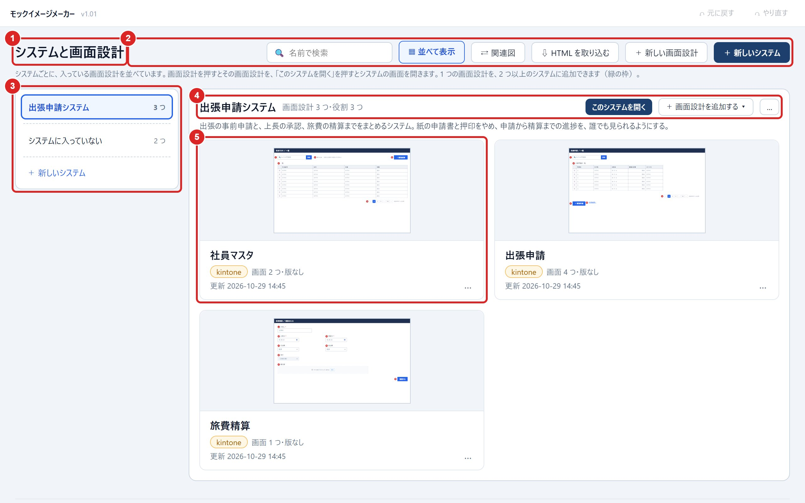
| 1 | 見出し | この画面の名前 |
| 2 | ボタンの並び | 「名前で検索」の検索欄と、並べて表示・関連図（2.5）・HTML を取り込む（6.4）・新しい画面設計（2.2）・新しいシステム（7.1）のボタン |
| 3 | システムの一覧 | 押したシステムに入っている画面設計だけを右に並べる。「システムに入っていない」を押すと、どのシステムにも追加していない画面設計が並ぶ |
| 4 | システムの見出し | システムの名前と中身の数。このシステムを開く でシステムの画面を開き（7.2）、＋ 画面設計を追加する でシステムに画面設計を追加する（7.1） |
| 5 | 画面設計の縮小画像 | 押すと、その画面設計の編集の画面が開く（第 3 章） |
画面設計の縮小画像は、上がその画面設計の 1 つ目の画面を縮めた絵で、下に名前・構築先・画面の数・最新の版・更新日時が出ます。2 つ以上のシステムに追加した画面設計は、緑の枠で囲まれ、「2 つのシステムで使っている」のように出ます。削除した画面設計とシステムは、画面のいちばん下のごみ箱に入ります（2.4）。
2.2 新しい画面設計を作る
画面設計は、業務アプリ 1 つ分の画面をまとめたものです。出張申請のアプリなら、一覧・新規申請・詳細の画面を 1 つの画面設計に描きます。
| 1 | ＋ 新しい画面設計 を押します（①）。 | 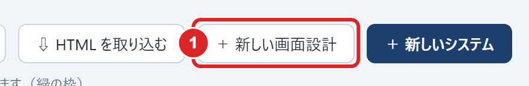 |
| 2 | 名前（①）を書き、構築先・見た目・追加先のシステムを選んで 画面設計を作って開く を押します（②）。 構築先は、kintone・Salesforce・Claude で作るアプリ・その他（名前を書く）から選びます。その他に書いた名前は、次から選択肢に加わります。 構築先に Salesforce か kintone を選ぶと、見た目もその構築先に合わせます（ほかの構築先では標準）。見た目は、ここで選び直せ、作った後も右のパネルで変えられます（3.10）。 | 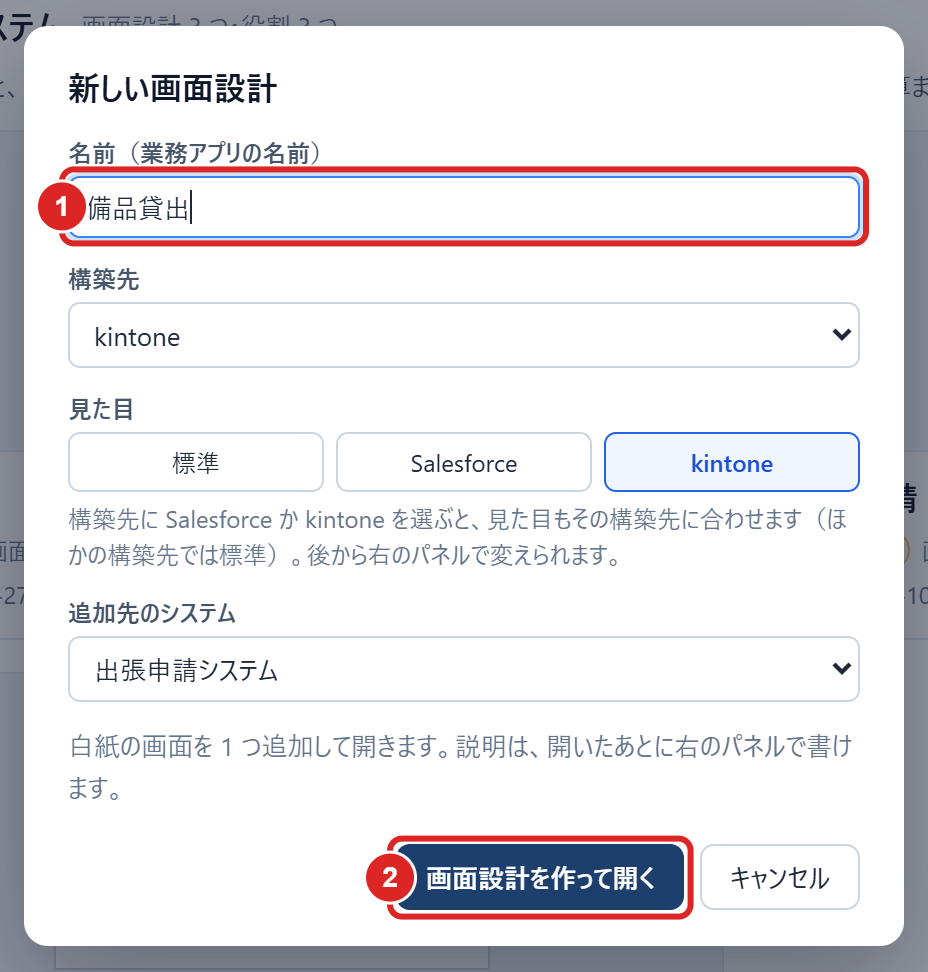 |
| 3 | 白紙の画面が 1 つ入った編集の画面が開きます。 ここからアイテムを置いて画面を描きます（第 3 章）。説明は、編集の画面の右のパネルで書けます。 | 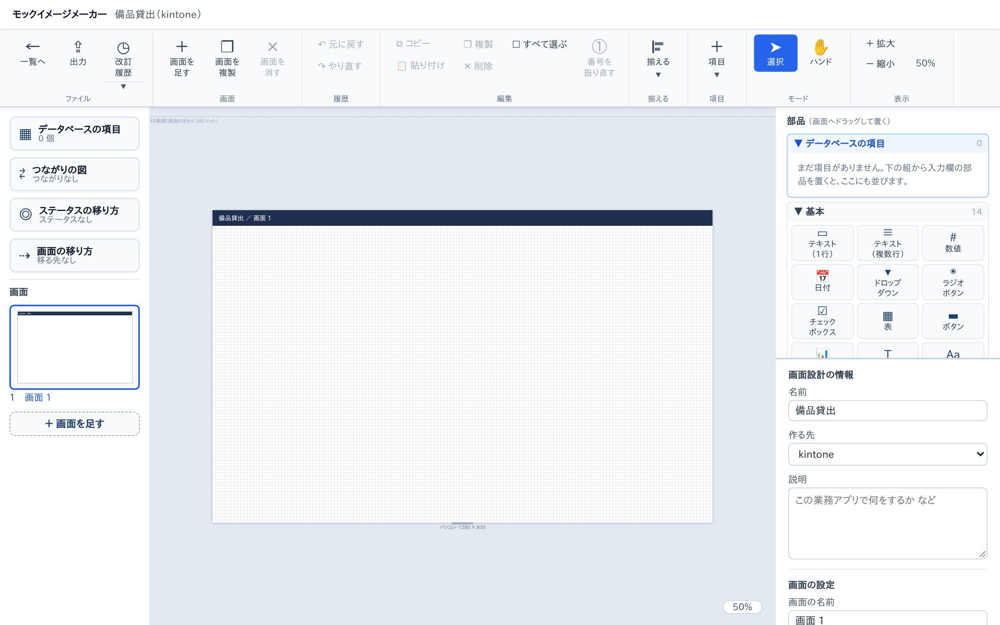 |
2.3 名前の変更・複製・削除
画面設計の右下の「…」を押すと、画面設計のメニューが開きます。
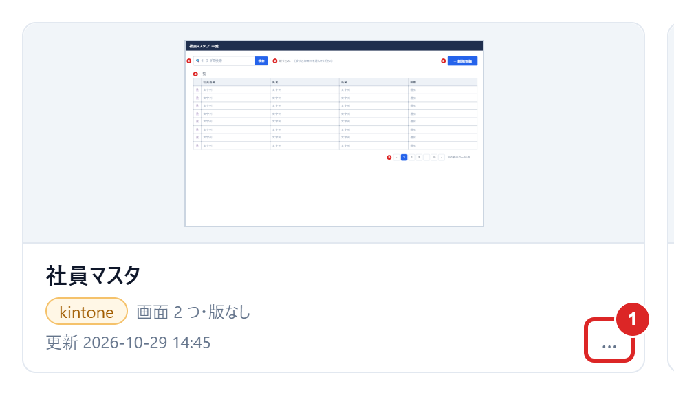
| 1 | … | 押すと、画面設計のメニューが開く |
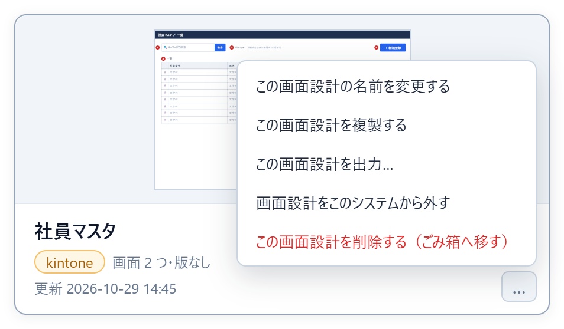
| メニュー | すること |
|---|---|
| この画面設計の名前を変更する | 画面設計の名前を変更するウィンドウを開く |
| この画面設計を複製する | 画面設計を丸ごとコピーし、「◯◯ のコピー」として一覧に追加する。改訂履歴はコピーしない |
| この画面設計を出力… | 出力のウィンドウを開く（第 6 章） |
| 画面設計をこのシステムから外す | 選んでいるシステムから画面設計を外す。画面設計は残る（システムを選んでいるときだけ出る） |
| この画面設計を削除する（ごみ箱へ移す） | 画面設計をごみ箱へ移す。ごみ箱から一覧に戻せる |
2.4 ごみ箱
削除した画面設計とシステムは、最初の画面のいちばん下の「ごみ箱」に入ります。見出しを押すと、ごみ箱が開きます。
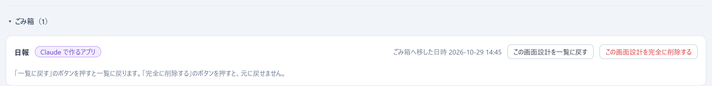
- この画面設計を一覧に戻す（システムは このシステムを一覧に戻す）を押すと、一覧に戻ります。
- この画面設計を完全に削除する（システムは このシステムを完全に削除する）を押すと、確認のウィンドウの後に消えます。完全に削除したものは元に戻せません。
- システムをごみ箱へ移しても、入っていた画面設計は残ります。
2.5 関連図
ボタンの並びの 関連図 を押すと、ごみ箱にない全部の画面設計を、データベース 1 つ（ボックス）として描いた図が出ます。どの画面設計がどこから値を引いているかを、全体で見られます。
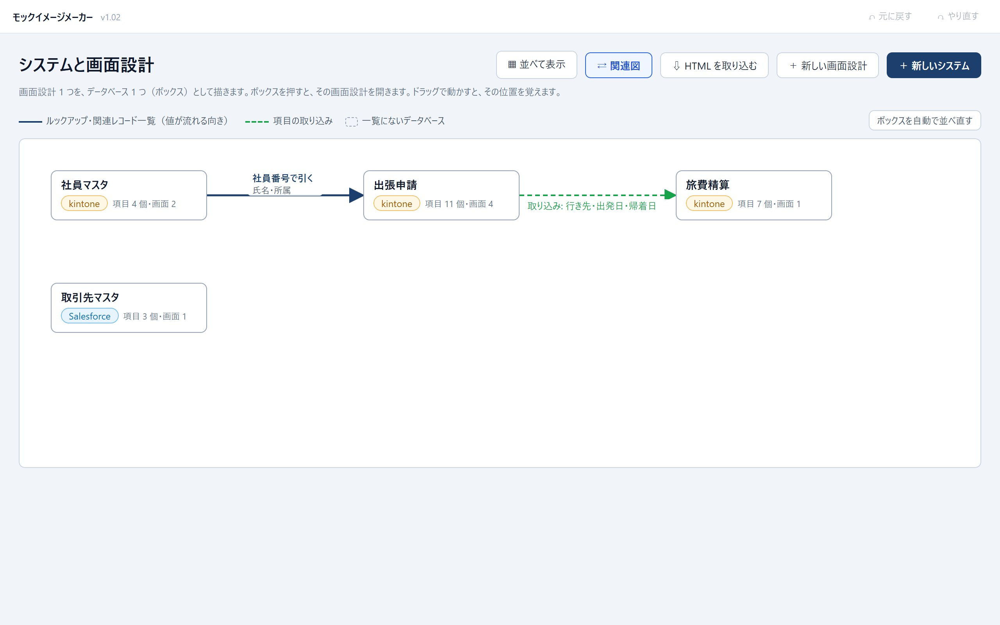
- 紺の矢印は、ルックアップと関連レコード一覧です。向きは値が流れる向き（ルックアップ元 → 引く側）で、矢印に、検索に使う項目と値をコピーする項目を書きます。
- 緑の点線は、項目の取り込みです。ほかの画面設計から項目を取り込んだ画面設計と、取り込み元の画面設計を結びます（3.6）。
- 一覧にないデータベースは、灰色の点線のボックスで描きます。
- ボックスを押すと、その画面設計が開きます。ボックスをドラッグで動かすと、その位置を覚えます。ボックスを自動で並べ直す を押すと、ドラッグで動かしたボックスが、自動で並べた位置に戻ります。
3. 画面設計を描く
最初の画面で画面設計を押すと、その画面設計の編集の画面が開きます。PowerPoint のスライドのように、左の一覧で画面を選び、真ん中の画面にアイテムを置いて描きます。
3.1 編集の画面の各部
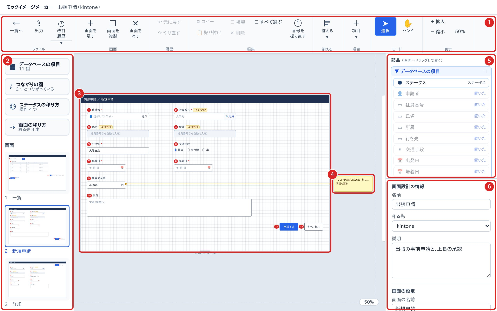
| 1 | ツールバー | ファイル・画面・履歴・編集・配置・項目・モード・表示の組のボタン。「編集」「配置」「項目」は、押すと組のボタンが開く |
| 2 | 左の一覧 | 上にデータベースの項目・関連図・ステータスの流れ・画面遷移図を開くボタン、下に画面の縮小画像。押した画面が真ん中に出る |
| 3 | 画面 | アイテムを置いて描く所。いちばん上の紺のヘッダーに「業務アプリ名 ／ 画面の名前」が自動で入る（標準の見た目のとき。3.10） |
| 4 | 吹き出し | 画面を見ただけでは伝わらない決まりの説明。画面の外の余白にも置ける（3.8） |
| 5 | アイテム一覧 | 画面へドラッグして置くアイテム（3.2）。いちばん上はデータベースの項目の組 |
| 6 | 選んだアイテムの設定 | アイテムを選んだときは、そのアイテムの設定。何も選んでいないときは、画面設計の情報（名前・構築先・見た目・説明）と画面の設定 |
画面の設定では、画面の名前・下に重ねる画面（3.13）・機器の種類・高さ・項目の表示・ヘッダーの形（3.13）・ヘッダーを表示するか・設定一覧の位置を決めます。機器の種類は、パソコン（幅 1280）・タブレット（幅 768）・スマホ（幅 375）から選びます。高さは、画面の下の縁をドラッグすると 8 ドットずつ伸ばせます。
3.2 アイテムを置く
| 1 | 右のアイテム一覧から、置きたいアイテム（①）を画面へドラッグします。 アイテム一覧のアイテムを押すと、見えている所の真ん中に置きます。 | 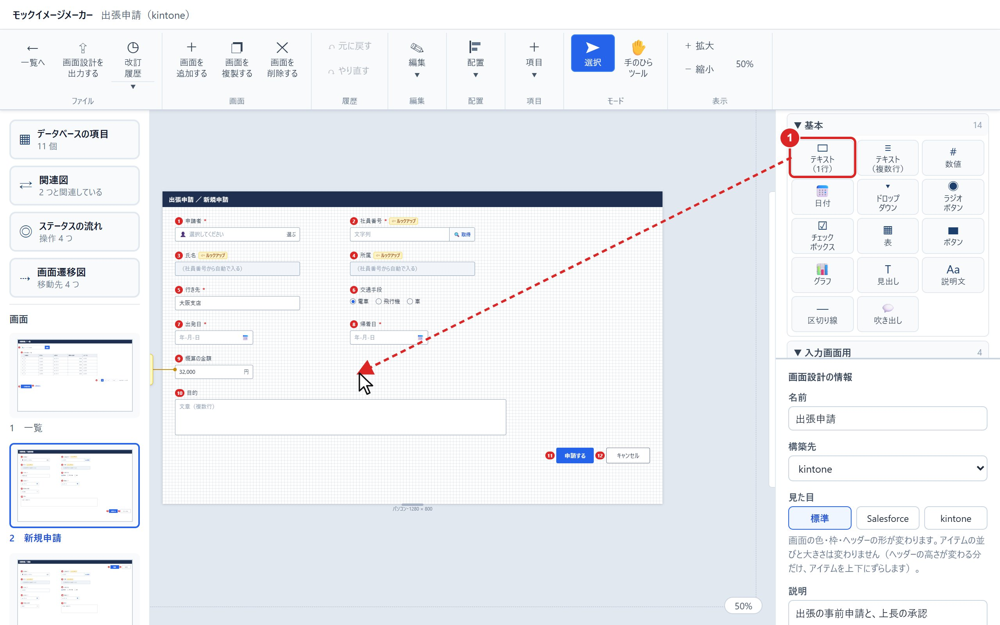 |
| 2 | 置いたアイテム（①）が選ばれ、右のパネルに設定（②）が出ます。 入力欄のアイテムには、その画面の次の赤い番号が付き、項目一覧にも、その項目が 1 行追加されます。 | 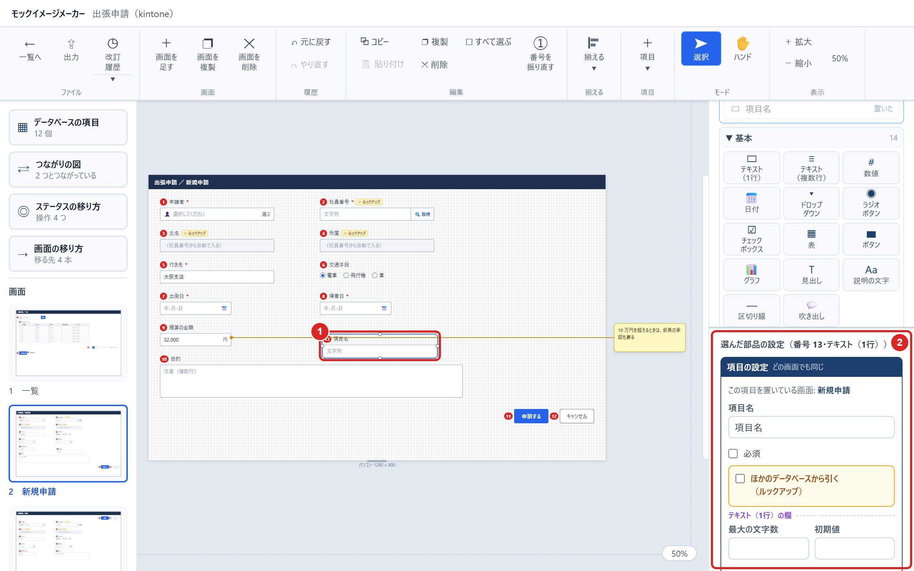 |
アイテムの位置と大きさは、8 ドットのマス目に吸い付きます。マス目は編集中だけ薄く見え、出力には出ません。アイテムを置いても、ほかのアイテムは動きません。
赤い番号は、アイテムを動かしても変わりません。番号を上から順に付け直したいときは、ツールバーの 編集 を押して開いた組の 番号を振り直す を押すと、上から下・左から右の順に 1 から付け直します。見出しと区切り線には、最初から番号が付きません。
アイテム一覧には、アイテムが 7 つの組に分けて並んでいます。組の見出しを押すと、組を開いたり閉じたりできます。
| 組 | アイテム |
|---|---|
| 基本 | テキスト（1行）・テキスト（複数行）・数値・日付・ドロップダウン・ラジオボタン・チェックボックス・表・ボタン・グラフ・見出し・説明文・区切り線・吹き出し |
| 入力画面用 | 添付ファイル・ユーザー選択・日時・自動計算 |
| 一覧画面用 | 検索欄・絞り込み欄・ページ送り・ツリー（フォルダなどの階層を、段を下げて並べる）・カレンダー（3.12） |
| 詳細画面用 | グループ枠・レコードの見出し・活動履歴（3.11）・メールの作成欄（3.12） |
| ポータル画面用 | 大きな画像と検索欄・タイル・記事の一覧・チャット（3.13） |
| 進捗画面用 | ステータス表示・進捗バー（ステータスを矢印の形で並べる）・タブ |
| その他 | 画像枠・リンク・アイコン |
3.3 アイテムを選ぶ・動かす・揃える
アイテムの選び方と動かし方は、Microsoft Office と同じです。
| 操作 | すること |
|---|---|
| アイテムを押す | そのアイテムを選ぶ |
| Ctrl か Shift を押しながら押す | 押したアイテムを、選んでいるものに追加する・選んでいるものから外す |
| 何もない所からドラッグ | 囲んだ枠に全部入ったアイテムと吹き出しを選ぶ |
| Ctrl+A | 画面のアイテムと吹き出しをすべて選ぶ |
| ドラッグ・矢印のキー | 選んだものを動かす（矢印のキーは 8 ドットずつ） |
| Ctrl を押しながらドラッグ | 選んだものを複製して動かす |
| Ctrl+C・Ctrl+V・Ctrl+D | 選んだものをコピーする・コピーしたものを貼り付ける・選んだものを複製する |
| Delete | 選んだものを削除する |
| Esc | 選ぶのをやめる |
コピー・貼り付け・複製・削除と、すべて選ぶのは、ツールバーの 編集 を押して開いた組のボタンでもできます。組のボタンは縦に 1 列に並びます。
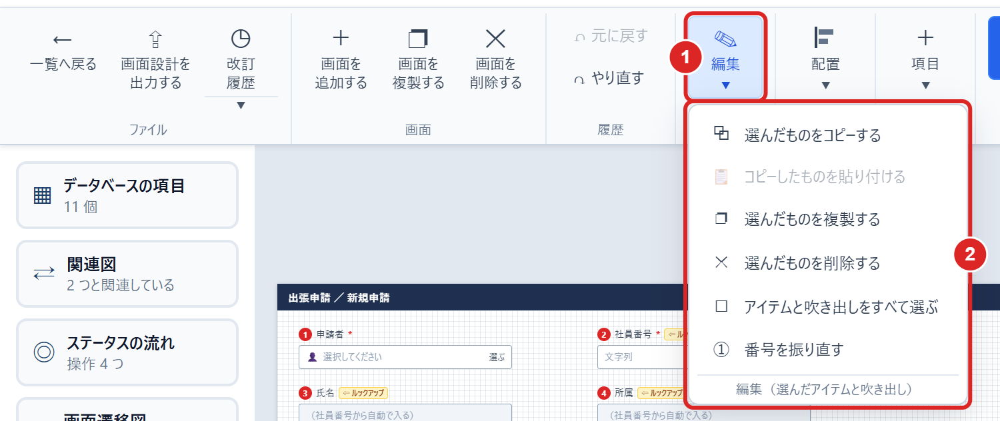
| 1 | 編集 | 押すと、編集のボタンの組が開く |
| 2 | 編集のボタン | 選んだものをコピーする・コピーしたものを貼り付ける・選んだものを複製する・選んだものを削除する・アイテムと吹き出しをすべて選ぶ・番号を振り直す |
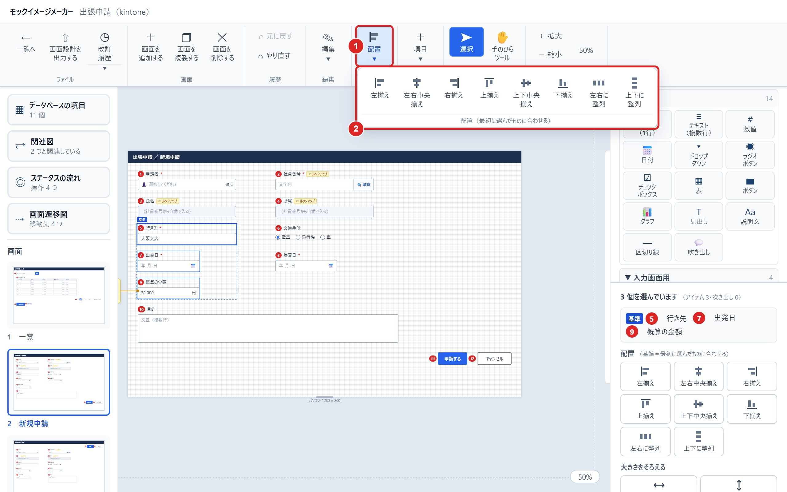
| 1 | 配置 | 押すと、配置のボタンの組が開く |
| 2 | 配置のボタン | 左揃え・左右中央揃え・右揃え・上揃え・上下中央揃え・下揃え・左右に整列・上下に整列 |
アイテムをいくつか選んで配置のボタンを押すと、最初に選んだアイテム（「基準」のマークが付いたアイテム）に合わせて揃えます。「左右に整列」「上下に整列」は、3 つ以上選んだときだけ使えます。いくつか選んでいる間は、右のパネルにも配置のボタンと「幅を揃える」「高さを揃える」のボタンが出ます。
3.4 アイテムの設定と設定一覧
アイテムを選ぶと、右のパネルにそのアイテムの設定が出ます。入力欄のアイテムの設定は 2 つに分かれます。上の「項目の設定」はデータベースの項目の設定で、どの画面でも同じです。下の「この画面だけの設定」は、その画面に置いたアイテムだけに効く設定です。
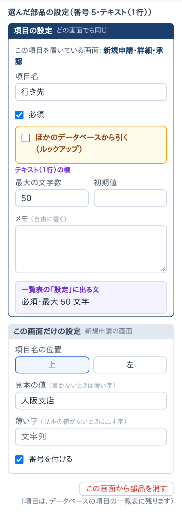
| 欄 | 書くこと |
|---|---|
| 項目の設定 | 項目名・必須・ルックアップ・項目の種類ごとの欄（最大文字数・選択肢・初期値など）・メモ |
| この画面だけの設定 | 項目名の位置（上・左）・サンプル値・入力のヒント（プレースホルダー）・番号を付ける |
| 設定一覧に出る文 | 書いた設定から自動で作る文。設定一覧の「設定」の列に入る |
画面からアイテムを削除するときは、この画面からアイテムを削除する を押すか、Delete を押します。アイテムを削除しても、項目は項目一覧に残ります。
画面の右（または下）には、番号の付いたアイテムの設定を並べた「設定一覧」が自動でできます。設定一覧は直接書き換えられず、アイテムの設定を変更すると設定一覧も変わります。設定一覧の行を押すと、そのアイテムを選べます。
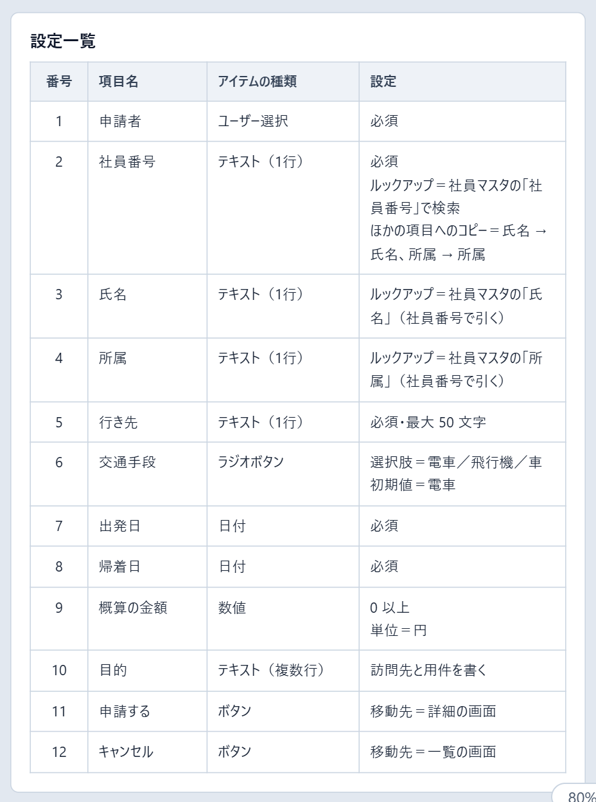
設定一覧を画面の右に置くか下に置くかは、画面の設定の「設定一覧の位置」で選びます。
3.5 データベースの項目
画面設計の項目は、項目一覧に 1 か所だけ持ちます。画面の入力欄のアイテムは項目一覧の項目を指すので、新規申請と詳細の画面に同じ項目を置いても、項目の設定は 1 つです。
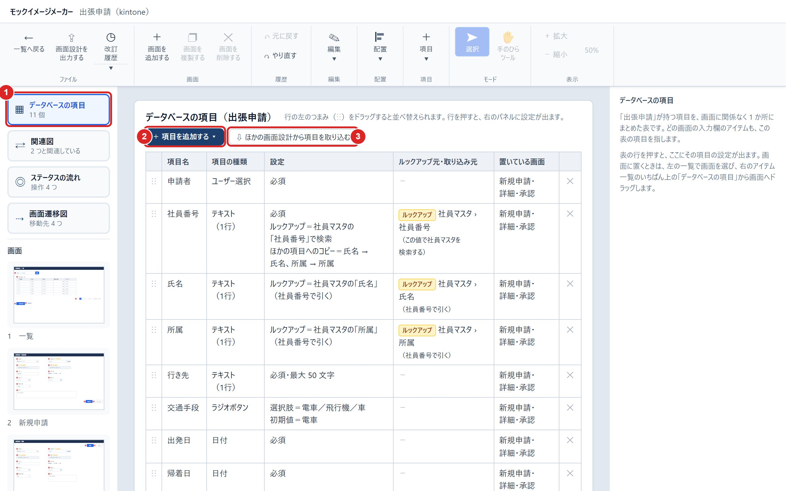
| 1 | データベースの項目 | 押すと、真ん中が項目一覧に変わる。画面の縮小画像を押すと画面に戻る |
| 2 | ＋ 項目を追加する | 項目の種類を選んで、項目一覧に項目を追加する |
| 3 | ほかの画面設計から項目を取り込む | ほかの画面設計の項目を取り込む（3.6） |
- 行の左のつまみをドラッグすると、項目を並べ替えられます。行を押すと、右のパネルに項目の設定が出ます。
- アイテム一覧のほかの組から入力欄のアイテムを置くと、項目一覧にも、その項目が 1 行追加されます。
- 項目一覧で項目を削除しても、画面のアイテムは残ります。残ったアイテムは削除したときの中身で固定され、項目の設定は変更できません。項目を戻すときは、そのアイテムの設定の この項目を項目一覧に戻す を押します。
構築先か見た目が kintone の画面設計では、項目の設定に「kintone のフィールド」の欄が出ます。kintone のアプリを作るときに渡す、kintone の種類・フィールドコード・kintone の計算式（自動計算の項目だけ）を書きます。テーブルの列にも同じ欄があります（8.6）。
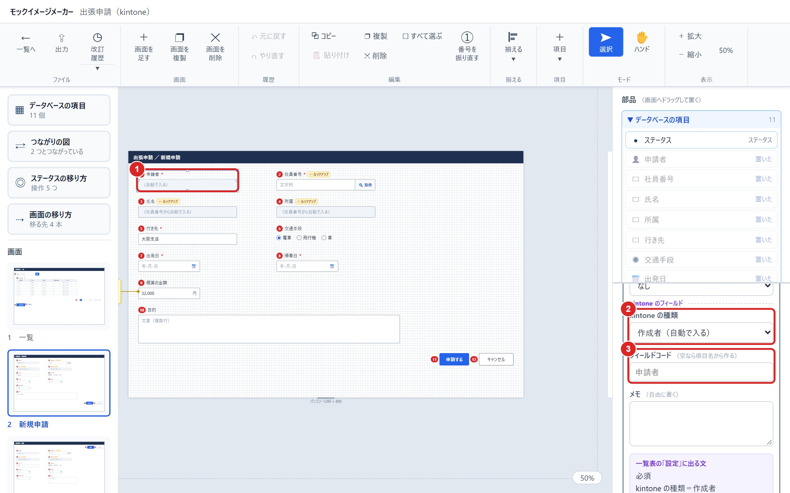
| 1 | 自動で入る項目 | kintone が値を入れる種類（レコード番号・作成者・更新者・作成日時・更新日時）は、灰色の点線の枠に「（自動で入る）」と描く |
| 2 | kintone の種類 | 項目の種類ごとに選べる種類から選ぶ。いちばん上の種類が既定 |
| 3 | フィールドコード | 空のときは、項目名から作ったコード（入力のヒント）を使う。決まりに合わないコード・同じアプリの中で重なるコードは、赤い字で知らせる |
| アイテム | 選べる kintone の種類 |
|---|---|
| テキスト（1行） | 文字列（1行）・リンク・レコード番号 |
| テキスト（複数行） | 文字列（複数行）・リッチエディター |
| 数値 | 数値・レコード番号 |
| 自動計算 | 計算・文字列（1行）の自動計算 |
| 日時 | 日時・時刻・作成日時・更新日時 |
| チェックボックス | チェックボックス・複数選択 |
| ユーザー選択 | ユーザー選択・組織選択・グループ選択・作成者・更新者 |
- 表にないアイテム（日付・ドロップダウン・ラジオボタン・添付ファイルなど）は、同じ名前の種類が 1 つだけです。テーブルの列では、自動で入る種類は選べません。
- 組織選択は建物のアイコンと「組織を選択」、グループ選択は 2 人のアイコンと「グループを選択」で描きます。「値だけ表示」の画面では、自動で入る項目にもサンプル値を出します。
- ルックアップの付いた項目は、kintone の種類を選べません（ルックアップのフィールドとして渡します）。ステータスの項目には欄がありません（kintone ではプロセス管理で作ります）。
- 設定一覧の「設定」の列にも、「kintone の種類＝作成者」「フィールドコード＝destination」のような行が出ます。
3.6 ルックアップと取り込み
ルックアップは、ほかのデータベースのレコードから値を引いて入れるしくみです。見本の出張申請では、社員番号を入れると、社員マスタから氏名と所属を引いて入れます。ルックアップは、検索に使う項目（社員番号）の設定に書きます。
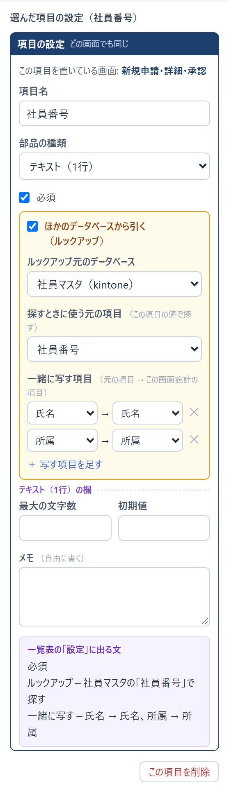
- ほかのデータベースから引く（ルックアップ） にチェックを付けます。
- 「ルックアップ元のデータベース」で、引く元の画面設計を選びます。一覧にないデータベースは名前を書きます。後でちょうど同じ名前の画面設計を作ると、その画面設計がルックアップ元になります（関連レコード一覧の元も同じです。同じ名前の画面設計が 2 つ以上あるときは、どれも元にしません）。
- 「検索に使う元の項目」で、この項目の値で検索する元の項目を選びます。
- 「ほかの項目へのコピー」で、元の項目と、値のコピー先にするこの画面設計の項目を選んで、コピーを 1 つ作ります。＋ コピーする項目を追加する で、コピーを増やせます。
ルックアップを設定した項目を置いたアイテムには、項目名の後ろに黄色い「ルックアップ」のマークが付きます。検索に使う項目の入力欄の右には「🔍 取得」が出て、値がコピーされる項目の入力欄は灰色になります。
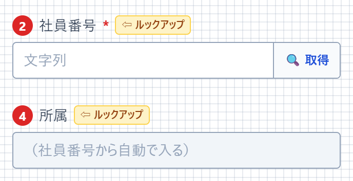
ほかの画面設計の項目をそのまま使いたいときは、項目一覧の ほかの画面設計から項目を取り込む で取り込みます。左で元の画面設計を選び、右で取り込む項目にチェックを付けて 項目を取り込む を押します。
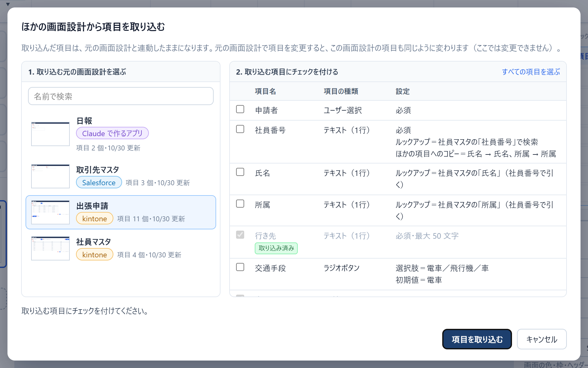
取り込んだ項目は、元の画面設計と連動したままです。元の画面設計で項目を変更すると取り込んだ側の項目も同じように変わり、取り込んだ側では変更できません。取り込んだ側だけで変更したいときは、項目の設定の上の 連動を解除する を押すと、そのときの中身をコピーした、この画面設計だけの項目になります。
3.7 表とグラフ
表のアイテムは、右のパネルの「表の中身」で 3 種類から選びます。呼び方は kintone に合わせています。
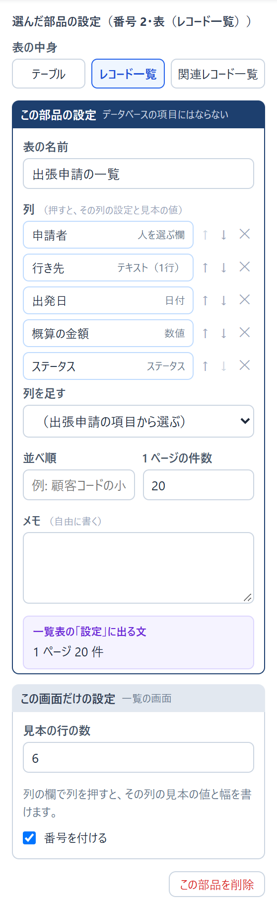
| 表の中身 | 使う画面 | 中身 |
|---|---|---|
| テーブル | 入力の画面 | 行を追加できる明細の表。列は表の中だけの項目で、データベースの項目に 1 つの項目として入る |
| レコード一覧 | 一覧の画面 | このデータベースのレコードを並べる。列はデータベースの項目から選ぶ。データベースの項目にはならない |
| 関連レコード一覧 | 詳細の画面 | ほかのデータベースから、条件に合うレコードを並べる。データベースの項目にはならない |
列の欄で列を押すと、その列のサンプル値と幅を書けます。サンプルの行数は「この画面だけの設定」で変えます。
右のパネルの「表示のしかた」で、関連レコード一覧は表のほかに「並べて表示」（3.11）、レコード一覧は表のほかに「かんばん」（3.12）も選べます。
グラフのアイテムは、棒・横棒・折れ線・円・積み上げ棒・じょうご・メーター・大きな数字の 8 種類から選びます。分類する項目・集計方法・サンプル値（1 行に「分類, 値」）を書きます。積み上げ棒・じょうご・メーター・大きな数字の書き方は 3.12 にあります。グラフはデータベースの項目にはなりません。
3.8 吹き出し
吹き出しは、画面を見ただけでは伝わらない決まりを書き添えるためのものです。吹き出しはアイテムに線で接続でき、アイテムを動かすと線も付いてきます。
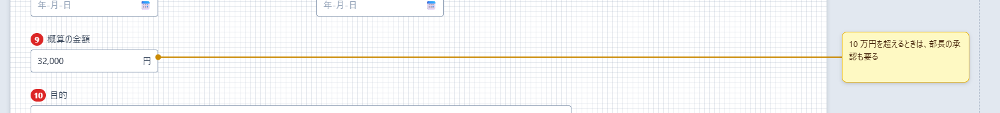
- アイテム一覧の「吹き出し」をアイテムの上にドラッグ＆ドロップすると、そのアイテムに接続した吹き出しを置けます。線の先の ○ をドラッグしてアイテムに重ねても、右のパネルの「接続先のアイテム」で選んでも、吹き出しをアイテムに接続できます。
- 画面の中と、画面のまわり 240 ドットまでの余白に置けます。
- 色は黄・赤・青・灰から、線の先の形は点・矢印・なしから選べます。
- 吹き出しには赤い番号が付かず、設定一覧にも入りません。
3.9 元に戻す・拡大と縮小
| 操作 | ボタン・キー |
|---|---|
| 元に戻す | ツールバーの「元に戻す」・Ctrl+Z |
| やり直す | ツールバーの「やり直す」・Ctrl+Y（Ctrl+Shift+Z でも） |
| 拡大・縮小 | ツールバーの「拡大」「縮小」・Ctrl+＋・Ctrl+－・Ctrl を押しながらホイール |
| 表示を 100% に戻す | Ctrl+0・アプリのメニューの「表示 > 表示を 100% に戻す」 |
| 見る所を動かす | モードの「手のひらツール」を選んでドラッグ。手のひらツールのときは、ホイールだけで拡大・縮小 |
- 画面設計を開くと、最初の画面の全体が、画面を描く所に収まる倍率（100% まで）で、その真ん中に出ます。左の一覧で画面を切り替えても、倍率は変わりません。
3.10 見た目を変える
見た目は、画面設計ごとの描き方です。標準・Salesforce・kintone の 3 つから選び、同じ画面設計の画面は、みな同じ見た目になります。Salesforce と kintone の見た目では、ヘッダーがその製品に似た 2 行の形になり、入力欄・ボタン・表・進捗バー・グラフなどの色と枠も、その製品に似せた形になります。アイテムの並びと大きさ、赤い番号は変わりません。
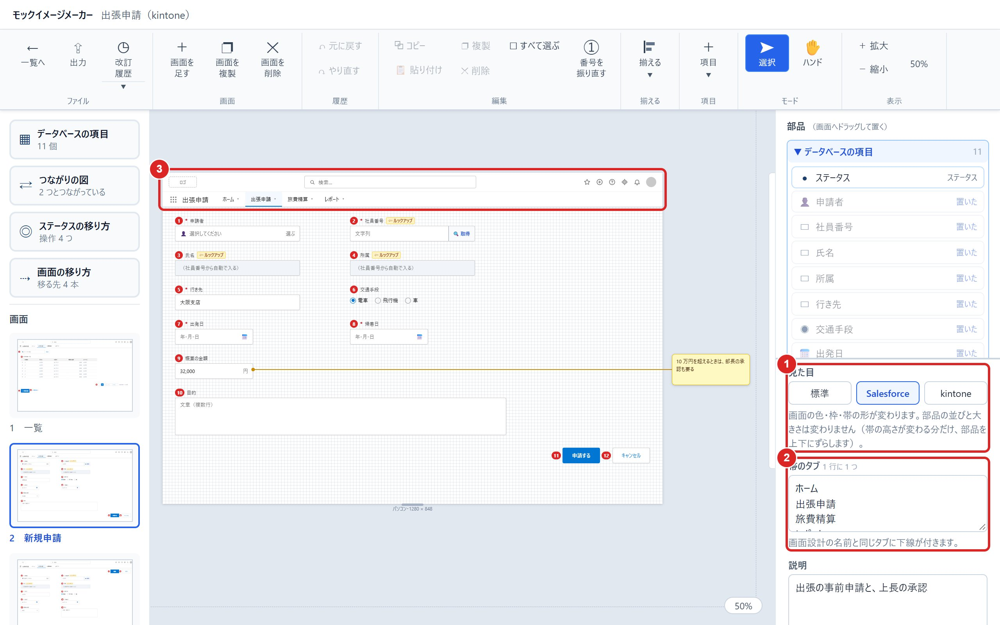
| 1 | 見た目 | 標準・Salesforce・kintone から選ぶ |
| 2 | ヘッダーのタブ | Salesforce の見た目のヘッダーに並べるタブ。1 行に 1 つ書く。書かないときは「ホーム」と画面設計の名前。画面設計の名前と同じタブに下線が付く |
| 3 | ヘッダー | 上の行に点線の「ロゴ」の枠・検索欄・アイコン、下の行にアプリの名前（画面設計の名前）とタブ |
- 新しい画面設計のウィンドウでは、構築先に Salesforce か kintone を選ぶと、見た目もその構築先に合わせます（2.2）。見た目は、作った後でも右のパネルでいつでも変えられます。
- Salesforce と kintone のヘッダーは、標準のヘッダーより 48 ドット高くなります。見た目を変えると、ヘッダーの下のアイテムと吹き出しが、ヘッダーの高さの差だけ上下にずれます（画面の高さも同じだけ変わります）。
- ヘッダーのロゴの所は、点線の「ロゴ」の枠です。製品のロゴ・アイコン・字は使っていません。
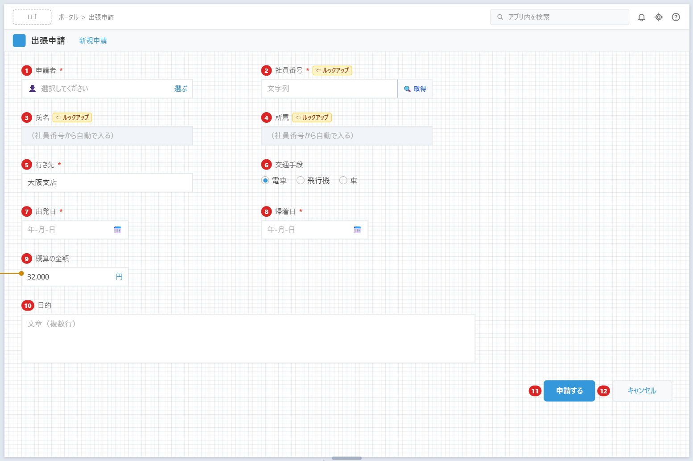
画面の設定の 項目の表示 で 値だけ表示 を選ぶと、その画面の入力欄のアイテムを、入力欄の枠の代わりに、値と下の線と鉛筆のアイコンで描きます。レコードの詳細の画面に使います。ラジオボタンとチェックボックスは、選んだ値だけが出ます。kintone の見た目の「値だけ表示」は、線もアイコンもない値だけです。
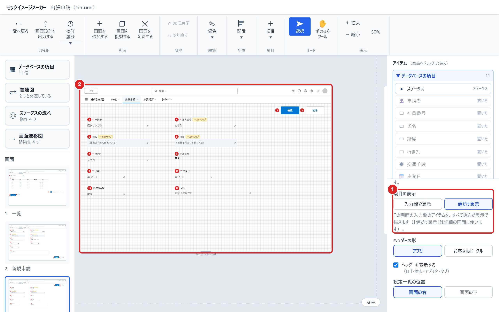
| 1 | 項目の表示 | 「入力欄で表示」「値だけ表示」から選ぶ。画面ごとに選べる |
| 2 | 値だけ表示の画面 | 値と下の線と鉛筆のアイコンで描く |
3.11 レコードの画面を描く
顧客の詳細のような、1 件のレコードを見る画面を「レコードの画面」と呼びます。レコードの画面は、いちばん上にレコードの見出しを置き、その下に、グループ枠に入れた項目・活動履歴・関連レコード一覧を、左右の列に分けて並べます。ひな形「顧客の詳細」「問い合わせ対応の 3 列」で画面を追加すると、この並びの画面ができます（4.1）。
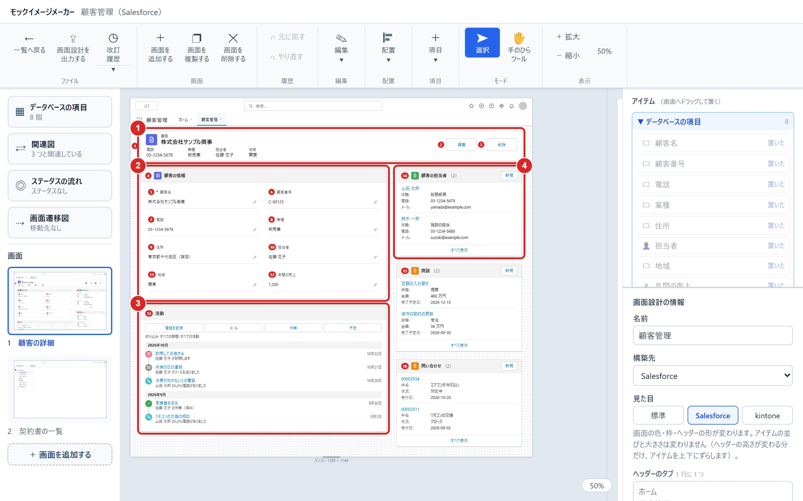
| 1 | レコードの見出し | レコードの種類・名前と、主な項目の値。右の編集・削除は、見出しの上に重ねて置いたボタン |
| 2 | グループ枠 | 項目のアイテムをまとめる枠。中のアイテムは、グループ枠と一緒に動く |
| 3 | 活動履歴 | 電話・メール・作業・予定などの記録を、書いた順に縦に並べる |
| 4 | 関連レコード一覧（並べて表示） | ほかのデータベースのレコードを、1 件ずつ縦に並べる |
グループ枠には、次の決まりでアイテムが入ります。
- アイテムを置く・動かすと、アイテムの真ん中があるグループ枠に入ります。真ん中をグループ枠の外へ動かすと、グループ枠から出ます。
- グループ枠を置いた・大きさを変えたときは、全体がグループ枠の中にあって、まだどのグループ枠にも入っていないアイテムが入ります。
- グループ枠を動かすと、中のアイテムも同じだけ動きます。グループ枠を削除しても、中のアイテムは残ります。グループ枠をコピー・複製すると、中のアイテムも一緒にコピーします。
- グループ枠は、いつも中のアイテムの後ろに描きます。設定一覧の「設定」の列には、「中のアイテム＝5〜12」のように、中のアイテムの赤い番号が出ます。
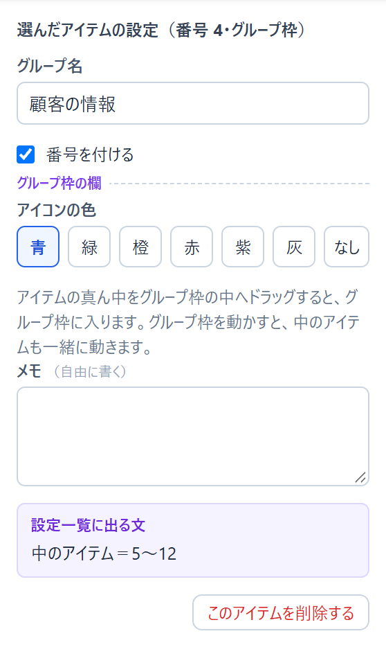
右のパネルでは、グループ名と、グループ名の左のアイコンの色を変えられます。kintone の見た目では、kintone のグループの形（「▾ グループ名」）で描きます。
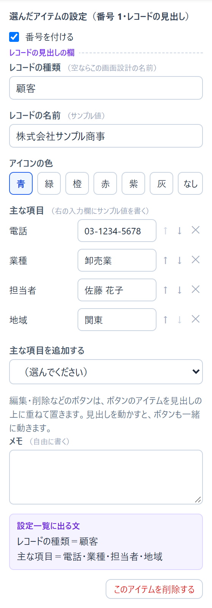
| 欄 | 書くこと |
|---|---|
| レコードの種類 | 「顧客」「問い合わせ」など。空のときは画面設計の名前 |
| レコードの名前 | レコードの名前のサンプル値（「株式会社サンプル商事」など） |
| アイコンの色 | 左のアイコンの色 |
| 主な項目 | 見出しの下の段に並べる項目を、項目一覧から選ぶ。右の入力欄に、その項目のサンプル値を書く |
- 編集・削除などのボタンは、ボタンのアイテムを見出しの上に重ねて置きます。重ねたボタンは見出しに入り、見出しと一緒に動きます。
関連レコード一覧の「表示のしかた」で「並べて表示」を選ぶと、1 件ごとに、1 列目の値をリンクの色で、2 列目からは「列名: 値」を 1 行ずつ並べます。件数はサンプルの行数で、高さは件数と列の数に合わせて変わります。元のデータベース・条件・列は、表に戻しても残ります。
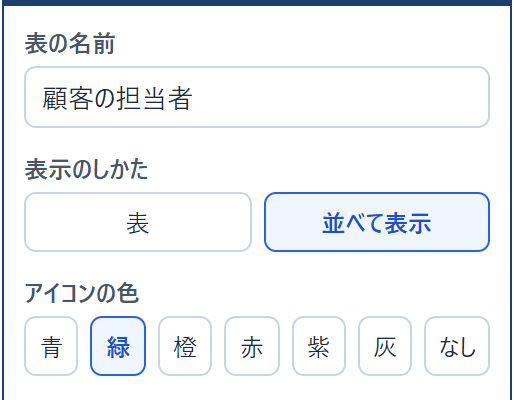
| アイテム | 右のパネルで書くこと |
|---|---|
| 活動履歴 | 1 行に「日付, 種類, 件名, 説明」を書く。種類は電話・メール・作業・予定・メモで、種類ごとに丸いマークの色が変わる。上のボタンの行と、月ごとの見出しは消せる |
| ツリー | 1 行に 1 つ書き、行の頭の空白 2 つで 1 段下げる。頭に「+」を書いた行は、閉じた形で描く。行の終わりの「（5）」のような数は、件数として薄く出す。選んでいる行と、フォルダのアイコンを出すかも選べる |
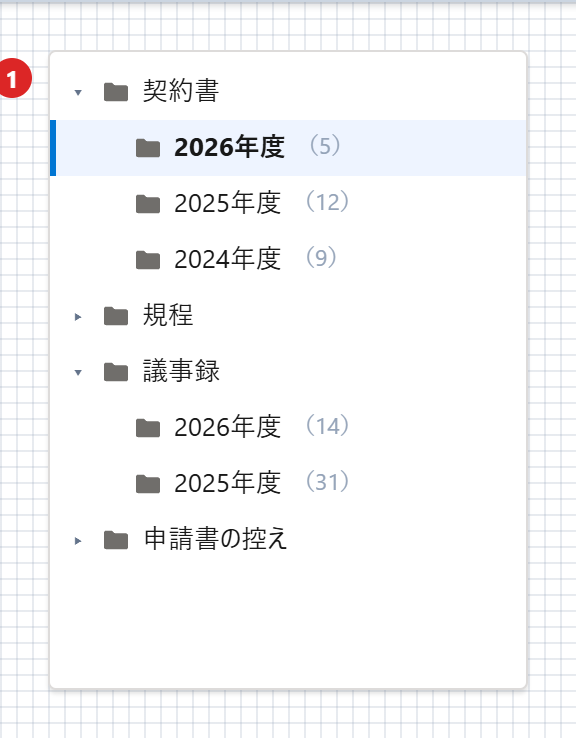
3.12 かんばんとダッシュボードを描く
商談の一覧のように、段階ごとの列にレコードを並べる画面は、レコード一覧を「かんばん」で表示して描きます。ホームの画面のように、数字とグラフを並べる画面は、グラフの種類を変えて並べます。ひな形「商談のかんばん」「ホームのダッシュボード」で画面を追加すると、この並びの画面ができます（4.1）。
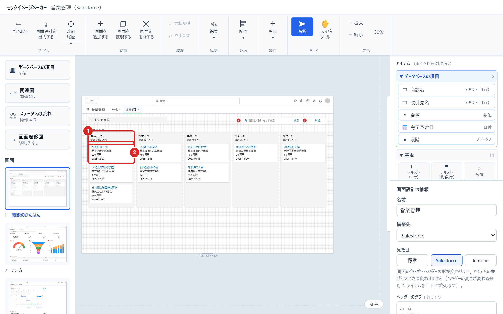
| 1 | 列 | 「列に分ける項目」（段階など）の選択肢ごとの列。選択肢の名前と件数、「列ごとに合計する項目」の合計を出す |
| 2 | カード | サンプルの行を 1 行ずつ 1 枚にする。1 行目は最初の列の値をリンクの色で、2 行目からは残りの列の値 |
レコード一覧を選び、右のパネルの「表示のしかた」で「かんばん」を選びます。
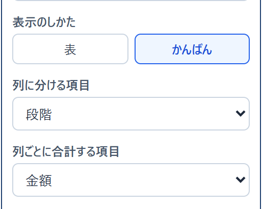
| 欄 | 書くこと |
|---|---|
| 列に分ける項目 | 表の列のうち、ステータス・ドロップダウン・ラジオボタンの項目から選ぶ。その項目の選択肢が、かんばんの列になる |
| 列ごとに合計する項目 | 表の列のうち、数値・自動計算の項目から選ぶ。選ぶと、列の見出しに合計を出す |
- カードは、列に分ける項目の列のサンプル値と同じ名前の列に置きます。どの選択肢とも同じでない行は、いちばん右の「（なし）」の列に置きます。
- 表とかんばんは、同じ列とサンプル値を使います。表に戻しても、列とサンプル値は残ります。かんばんの高さは、いちばん多い列のカードの枚数に合わせて変わります。
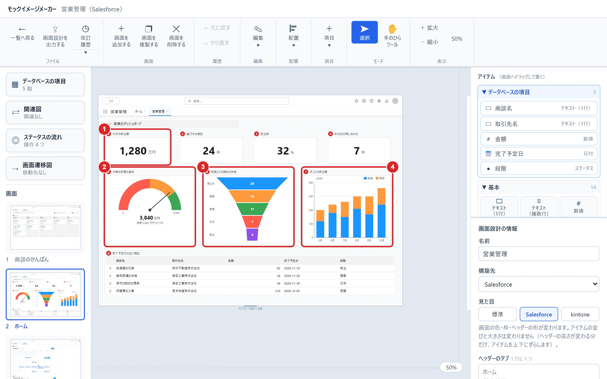
| 1 | 大きな数字 | サンプル値の 1 行目の値を大きく出す |
| 2 | メーター | 1 行目の値を、0 から「目標の値」までの半円の上で、針で指す |
| 3 | じょうご | 1 行ごとに 1 段。値が大きいほど帯の幅が広い |
| 4 | 積み上げ棒 | 1 行に「分類, 値1, 値2…」。値ごとに色を変えて積み上げる |
| グラフの種類 | サンプル値の書き方 | この種類だけの欄 |
|---|---|---|
| 大きな数字 | 1 行目に「名前, 値」 | なし |
| メーター | 1 行目に「名前, 値」 | 目標の値（半円の右の端の値） |
| じょうご | 1 行に「段階, 値」。上の行から順に描く | なし |
| 積み上げ棒 | 1 行に「分類, 値1, 値2…」。値に桁の区切りの「,」は書かない | 凡例の名前（1 行に 1 つ。値1・値2 の順） |
- 大きな数字とメーターには、「分類する項目」「分け方」の欄は出ません。
アイテム一覧の「一覧画面用」のカレンダーは、予定を月か週で並べます。右のパネルの「予定」に、1 行に「日付, 時刻, 件名」を書きます。時刻は「10:00-11:30」の形で書き、時刻が空の予定は終日の予定にします。
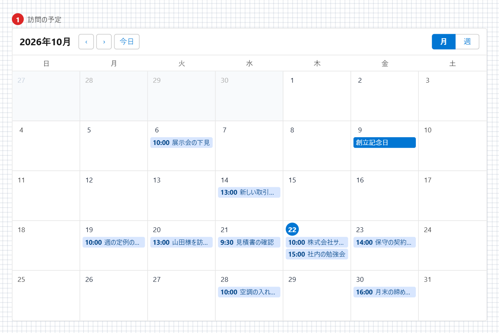
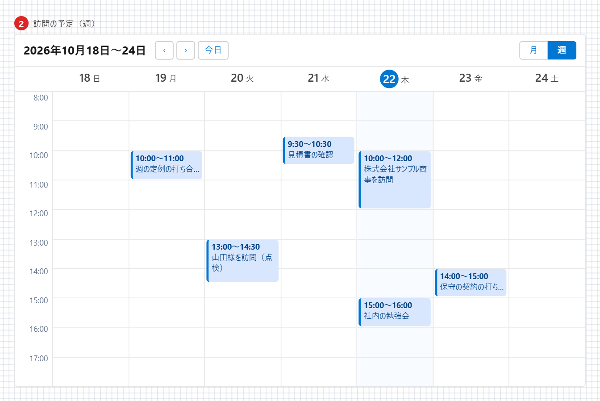
| 欄 | 書くこと |
|---|---|
| 表示のしかた | 月（日曜から土曜の 7 列で、その月の日を並べる）・週（左に時刻を並べ、予定を時刻の位置と長さの箱で描く） |
| 今日として描く日 | この日のある月か週を描き、この日に印を付ける |
| 予定 | 1 行に「日付, 時刻, 件名」。日付や時刻が読めない行は描かない |
| 描く時刻 | 週の表示で描く時刻の範囲（「8:00-18:00」の形） |
- 月の表示で 1 日のマスに入りきらない予定は、「ほか 2 件」のようにまとめます。週の表示で時刻の重なる予定は、横に並べます。
アイテム一覧の「詳細画面用」のメールの作成欄は、レコードの画面からメールを送る欄を、1 つのアイテムで描きます。右のパネルで、差出人・宛先・件名・本文のサンプル値を書きます。
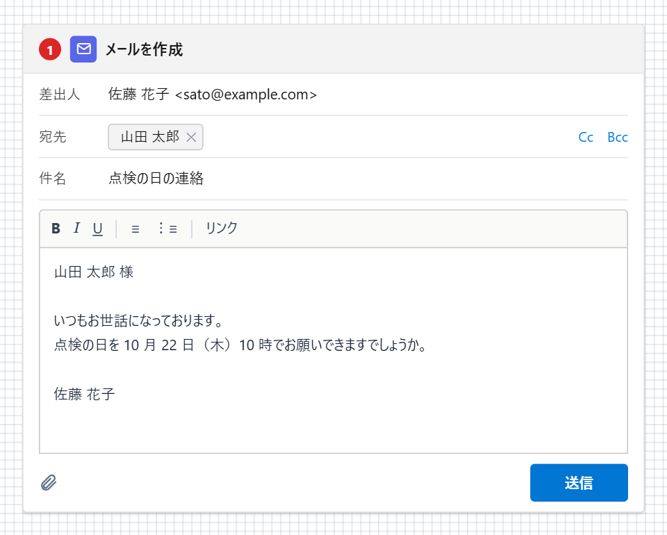
- 宛先は、「、」で区切ると、宛先ごとに丸い札で描きます。書式のボタンの行は、出さないこともできます。
- 「送信」を押した後の画面を伝えるときは、ボタンのアイテムをメールの作成欄の「送信」の上に重ねて置き、移動先を選びます。重ねたボタンはメールの作成欄に入り、一緒に動きます。
- カレンダーとメールの作成欄は、データベースの項目にはなりません。
3.13 小さなウィンドウとお客さまポータルを描く
承認申請のように、今の画面の上に開く小さなウィンドウは、画面を 1 つ追加し、その画面の設定で「下に重ねる画面」を選んで描きます。お客さま向けの Web のサイト（お客さまポータル）の画面は、画面の設定の「ヘッダーの形」をお客さまポータルにして描きます。ひな形「承認申請のウィンドウ」「お客さまポータルのトップ」「AI のチャットのウィンドウ」で画面を追加すると、この形の画面ができます（4.1）。
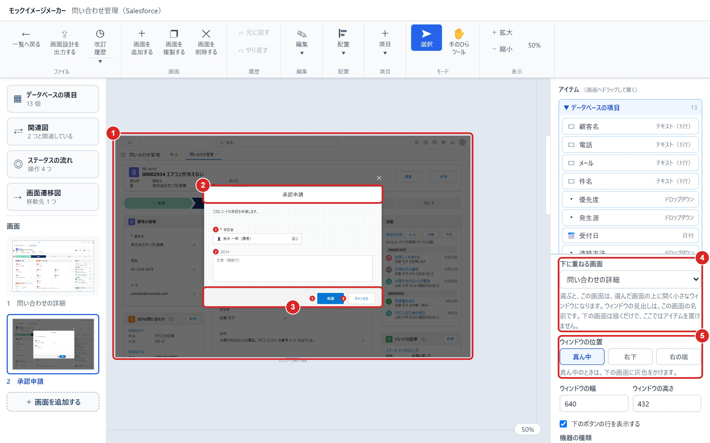
| 1 | 下の画面 | 「下に重ねる画面」で選んだ画面。描くだけで、アイテムは置けない。ウィンドウが真ん中のときは灰色をかける |
| 2 | ウィンドウの見出しの行 | この画面の名前と ✕。Salesforce の見た目の真ん中のウィンドウでは、✕ をウィンドウの右上の外に描く |
| 3 | 下のボタンの行 | ボタンを置く薄い灰色の行。「下のボタンの行を表示する」のチェックを外すと消える |
| 4 | 下に重ねる画面 | 「なし」か、同じ画面設計の画面から選ぶ。選ぶと、この画面が小さなウィンドウになる |
| 5 | ウィンドウの位置 | 真ん中・右下・右の端から選ぶ。その下でウィンドウの幅と高さを決める（右の端のときは幅だけ） |
- アイテムは、ウィンドウの中（見出しの行の下から下の端まで）に置きます。設定一覧には、ウィンドウの中のアイテムだけが出ます。
- ウィンドウの位置や大きさを変えると、中のアイテムも一緒に動きます。初めて下に重ねる画面を選んだときは、今あるアイテムの並びを、ウィンドウの中の左上へ移します。
- 下の画面を変更すると、重ねている画面の下も同じに変わります。下の画面を削除すると、重ねていた画面は小さなウィンドウでない画面に戻ります（アイテムは残ります）。
- 下に重ねる画面に、小さなウィンドウの画面は選べません。ほかの画面の下に重ねられている画面は、小さなウィンドウにできません。機器の種類は、下の画面に合わせます。
- PDF の画面のページでは、見出しの下に「「問い合わせの詳細」の上に開く小さなウィンドウ」のように書きます。画面遷移図では、小さなウィンドウの画面も 1 つの画面のボックスです。
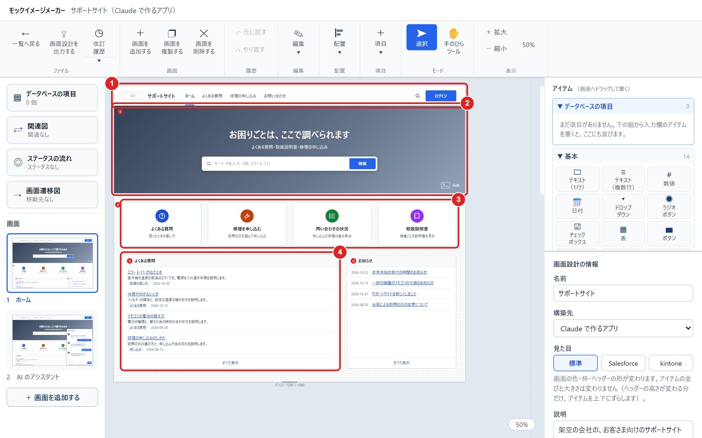
| 1 | お客さまポータルのヘッダー | 点線の「ロゴ」の枠・サイトの名前・メニュー・検索のアイコン・右上のボタン。高さは 72 ドットで、見た目を変えても同じ |
| 2 | 大きな画像と検索欄 | 見出し・説明・検索欄。画像は描かず、色の付いた面に「画像」と書く。置くと、画面の幅いっぱいになる |
| 3 | タイル | 題名と説明のタイルを、同じ幅で横に並べる。アイコンの色は左から 青・橙・緑・紫 |
| 4 | 記事の一覧 | 記事の題名（リンク）・説明・分類・日付を並べる。説明を出さない形は、日付と題名を 1 行に並べる |
ヘッダーの形は、画面の設定の「ヘッダーの形」で、アプリ・お客さまポータルから選びます。お客さまポータルを選ぶと、サイトの名前・メニュー・右上のボタンの欄が出ます。
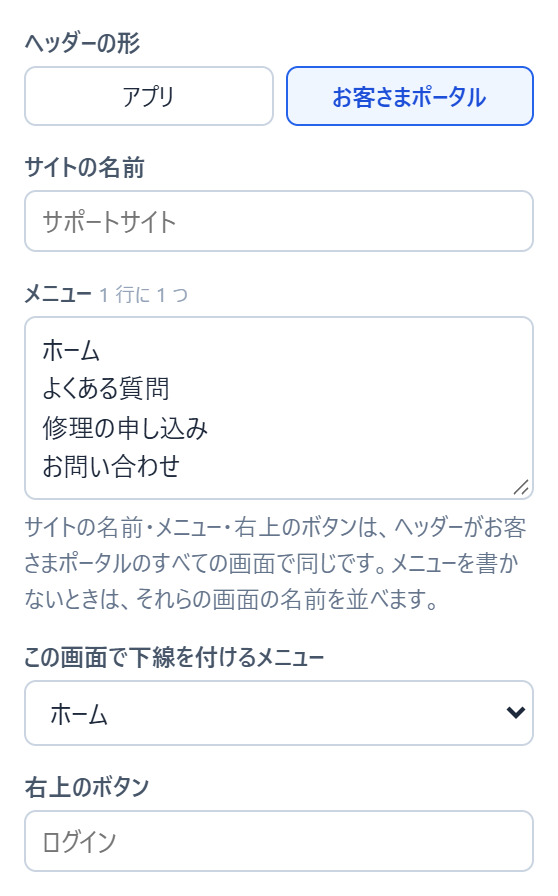
| 欄 | 書くこと |
|---|---|
| サイトの名前 | ヘッダーの左に出す名前。書かないときは画面設計の名前 |
| メニュー | 1 行に 1 つ書く。書かないときは、ヘッダーがお客さまポータルの画面の名前を、画面の並びの順に並べる |
| この画面で下線を付けるメニュー | この画面で選ばれているメニュー。最初は、画面の名前と同じメニュー |
| 右上のボタン | 右上の青いボタンの文字。書かないときは「ログイン」 |
- サイトの名前・メニュー・右上のボタンは、ヘッダーがお客さまポータルのすべての画面で同じです。画面ごとに選ぶのは、下線を付けるメニューだけです。
- ヘッダーの形を変えると、ヘッダーの高さの差だけ、ヘッダーの下のアイテムと吹き出しが上下にずれます。
アイテム一覧の「ポータル画面用」の組には、次の 4 つのアイテムがあります。どれもデータベースの項目にはなりません。
| アイテム | 右のパネルで書くこと |
|---|---|
| 大きな画像と検索欄 | 見出し・説明・検索欄を出すか・検索欄の薄い字 |
| タイル | 1 行に「題名, 説明」を書く。書いた数だけタイルを並べる |
| 記事の一覧 | 見出しの文字と、1 行に「題名, 説明, 分類, 日付」。説明を出すか・下に「すべて表示」を出すか |
| チャット | 見出しの文字と、1 行に「話す人: 文」。右の吹き出しにする人・見出しの行を出すか・入力欄の薄い字 |
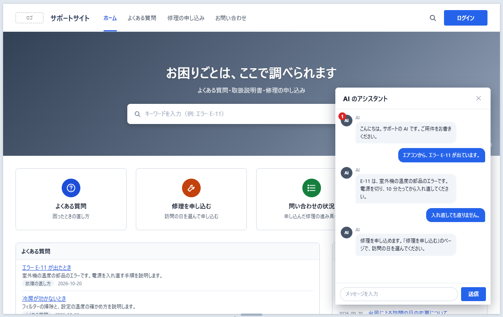
- チャットは、右の吹き出しにする人の文を右に、ほかの人の文を左に描きます。話す人を書いていない行は、前の行と同じ人の文にします。
- チャットは、ページの中にも、小さなウィンドウの中にも置けます。小さなウィンドウの中いっぱいに置くときは、見出しの行を出さない形にします（ウィンドウの見出しの行があるため）。
4. 複数の画面と画面遷移
1 つの画面設計には、一覧・新規申請・詳細のように、いくつもの画面を追加できます。画面どうしの関係は、ステータスの流れと画面遷移図の 2 つの図で伝えます。
4.1 画面を追加する
左の一覧のいちばん下の ＋ 画面を追加する（ツールバーの「画面を追加する」でも）を押すと、ひな形を選ぶウィンドウが開きます。ひな形を選んでウィンドウの 画面を追加する を押すと、開いている画面のすぐ後ろに画面が追加されます。
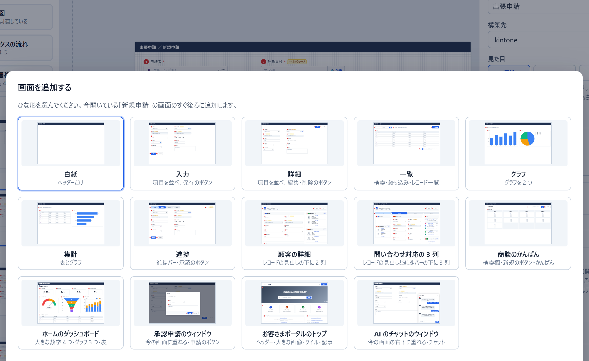
| ひな形 | 中身 |
|---|---|
| 白紙 | ヘッダーだけ |
| 入力 | データベースの項目を 2 列で並べ、下に保存とキャンセルのボタン |
| 詳細 | 入力と同じ並びの項目と、右上に編集・削除のボタン |
| 一覧 | 検索欄・絞り込み欄・＋ 新規登録のボタン・レコード一覧・ページ送り |
| グラフ | 絞り込み欄と、棒グラフ・円グラフ |
| 集計 | 絞り込み欄と、レコード一覧・横棒グラフ |
| 進捗 | 進捗バー・ステータス表示・項目と、承認する・差し戻すのボタン |
| 顧客の詳細 | レコードの見出しと編集・削除のボタンの下に、左の列にグループ枠（項目を 2 列）と活動履歴、右の列に関連レコード一覧の並べて表示を 3 つ（3.11） |
| 問い合わせ対応の 3 列 | レコードの見出しと進捗バーの下に、3 つの列で、グループ枠・関連レコード一覧・活動履歴 |
| 商談のかんばん | 「すべての商談」の見出しと検索欄・新規のボタンの下に、幅いっぱいのかんばん（3.12） |
| ホームのダッシュボード | 大きな数字 4 つの下に、メーター・じょうご・積み上げ棒と、完了予定日の近い商談の表（3.12） |
| 承認申請のウィンドウ | 今開いている画面の真ん中に重ねる小さなウィンドウ。説明文・承認者・コメントと、下のボタンの行に申請・キャンセルのボタン（3.13） |
| お客さまポータルのトップ | ヘッダーの形をお客さまポータルにし、大きな画像と検索欄・タイル 4 つ・記事の一覧 2 つ（よくある質問・お知らせ）（3.13） |
| AI のチャットのウィンドウ | 今開いている画面の右下に重ねる小さなウィンドウ。中いっぱいにチャット（3.13） |
- ひな形「顧客の詳細」「問い合わせ対応の 3 列」は、項目一覧に項目がない画面設計では、サンプルの項目（顧客名・電話など）を項目一覧に追加して並べます。項目がある画面設計では、入力の項目をグループ枠に並べます。
- ひな形「承認申請のウィンドウ」「AI のチャットのウィンドウ」は、今開いている画面を下に重ねる画面にします（今開いている画面が小さなウィンドウのときは、その下の画面）。承認申請のウィンドウは、承認者（ユーザー選択）とコメント（テキスト（複数行））の項目が項目一覧になければ追加し、キャンセルのボタンの移動先を下の画面にします。
- ひな形「商談のかんばん」「ホームのダッシュボード」は、項目一覧に項目がない画面設計では、サンプルの項目（商談名・取引先名・金額・完了予定日・段階）を項目一覧に追加して並べます。項目がある画面設計では、入力の項目の最初の 4 つを表の列にし、ステータスの項目（なければ最初のドロップダウンかラジオボタン）で列に分けます。
ウィンドウの下の 今の画面（◯◯）を複製する を押すと、アイテムも吹き出しもそのままコピーした画面を追加します。
4.2 画面の名前の変更・並べ替え・複製・削除
左の一覧の縮小画像にマウスを乗せると、右上に「…」が出ます。押すと、画面のメニューが開きます。
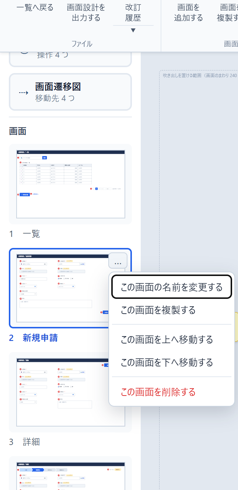
- メニューの「この画面の名前を変更する」「この画面を複製する」「この画面を上へ移動する」「この画面を下へ移動する」「この画面を削除する」で、その画面を操作できます。縮小画像をドラッグしても並べ替えられます。
- PageUp・PageDown を押すと、前後の画面へ移ります。
- 画面を削除するときは、消えるアイテムと吹き出しの数を確認のウィンドウで知らせます。画面はごみ箱に入らないため、削除した画面を戻すときは元に戻す（Ctrl+Z）を使います。最後の 1 つの画面は削除できません。
4.3 ステータスの流れ
ステータスは、申請 → 承認待ち → 承認済みのような、レコードの進捗です（kintone のプロセス管理に当たります）。ステータスの並びと、ステータスを進める操作は、画面設計に 1 つだけ持ちます。
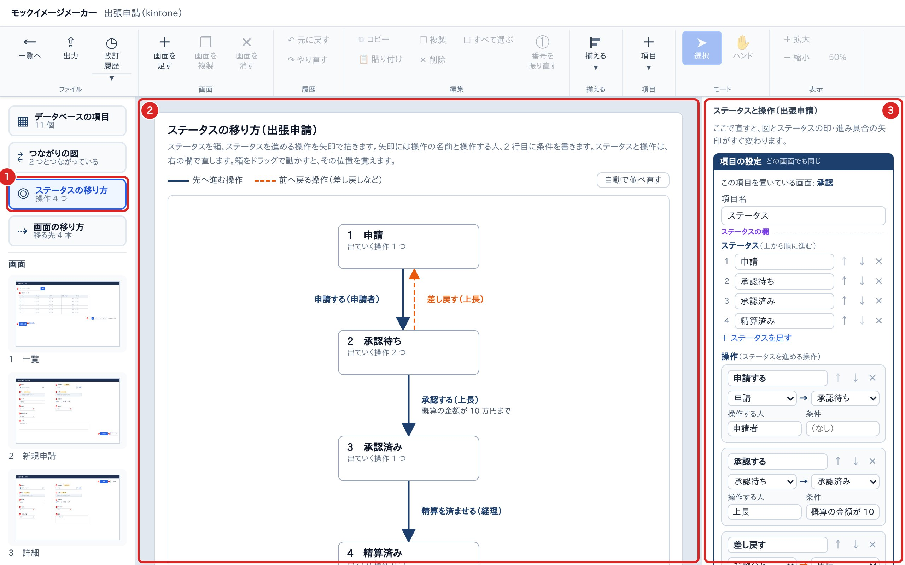
| 1 | ステータスの流れ | 押すと、真ん中にステータスの流れの図が出る。小さな字は操作の数 |
| 2 | 図 | ステータスをボックス、操作を矢印で描く。先へ進む操作は紺の実線、前へ戻る操作（差し戻しなど）は橙の点線 |
| 3 | ステータスと操作 | ステータスの並びと、操作ごとの前と次のステータス・操作できる人・条件を変更する。変更すると図もすぐ変わる |
ステータスの項目は、アイテム一覧の「ステータス表示」か「進捗バー」を置くか、ひな形「進捗」で画面を追加するとできます。最初はサンプルの操作（申請する・承認する・差し戻す・完了にする）が入っています。
進捗バーは、最初のステータスから操作をたどって、いちばん先まで進める並びを左から矢印で並べます。却下のように、途中のステータスから分かれて終わるステータス（先へ進む操作がなく、来る操作だけがあるもの）は、矢印の並びから外し、右に「〇〇から分かれる終わり」の字と、赤い枠で囲んだステータスの名前で出します。「今のステータス（サンプル）」が分かれる終わりのステータスのときは、そのステータスの名前を赤く塗り、矢印は分かれる元のステータスまで済んだ色にします。
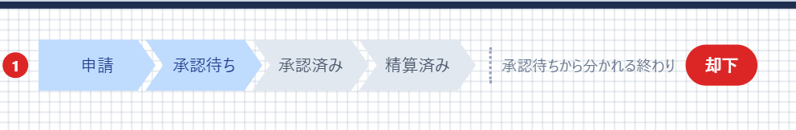
4.4 画面遷移図
ボタンとリンクには「移動先」を持たせられます。アイテムを選び、右のパネルの「移動先」で画面を選ぶと、押したときにどの画面へ移るかを図に描けます。ほかの画面設計の画面も選べます。
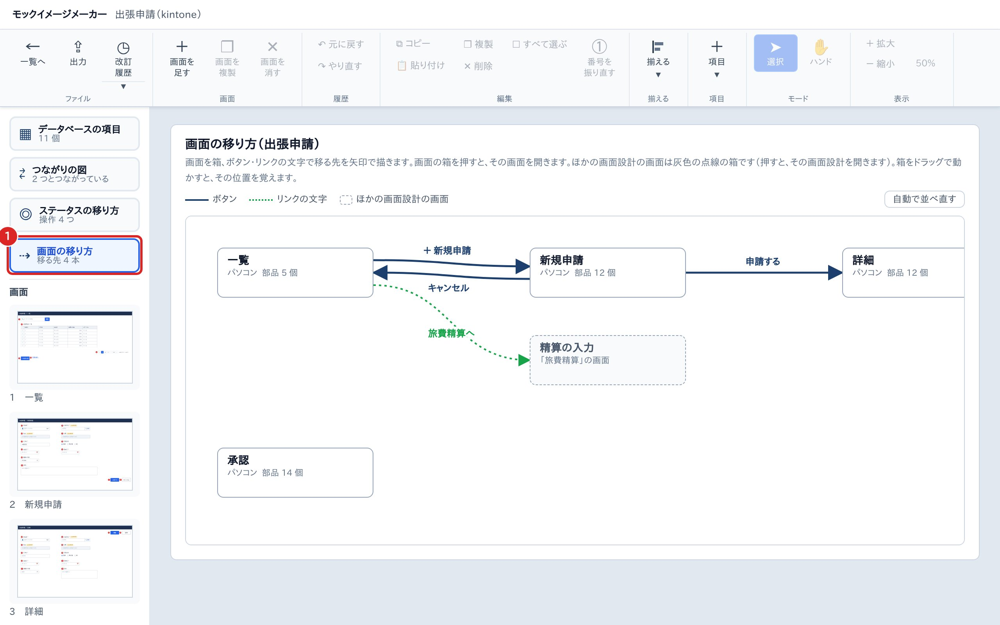
| 1 | 画面遷移図 | 押すと、真ん中に画面遷移図が出る。小さな字は移動先の数 |
- 画面をボックス、移動先を矢印で描きます。ボタンは紺の実線、リンクは緑の点線です。
- ほかの画面設計の画面は、灰色の点線のボックスで描きます。押すと、その画面設計のその画面が開きます。
- ボックスを押すと、その画面が開きます。ボックスをドラッグすると位置を覚えます。「ボックスを自動で並べ直す」を押すと、ドラッグで動かしたボックスが、自動で並べた位置に戻ります。
5. 改訂履歴
ベンダーに渡した後で画面設計を変更したときは、どこを変えたかを伝える必要があります。「改訂する」を押すと、そのときの画面設計の中身を版（第 1 版・第 2 版…）として残し、前の版との違いを自動で一覧にします。
5.1 改訂する
ツールバーの 改訂履歴 の下の ▼ を押すと、「改訂する」「改訂履歴」のメニューが開きます。
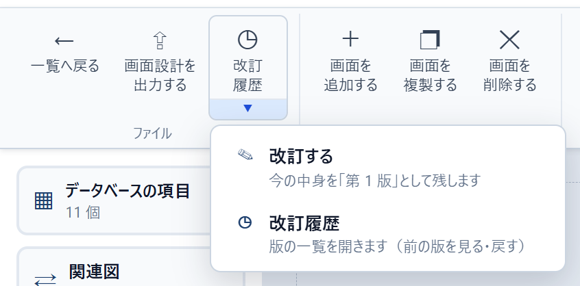
改訂する を押すと、「改訂する」のウィンドウが開きます。
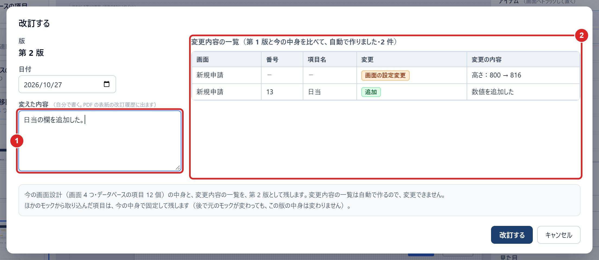
| 1 | 改訂内容 | 自分で書く。PDF の表紙の改訂履歴に出る |
| 2 | 変更点の一覧 | ひとつ前の版と今の中身を比べて自動で作る。変更できない |
版の番号は次の番号が自動で入り、日付は今日が入ります（日付は変更できます）。ウィンドウの 改訂する を押すと、版が残ります。第 1 版は「最初の版」で、変更点の一覧はありません。
5.2 改訂履歴を見る
ツールバーの 改訂履歴 を押すと、改訂履歴のウィンドウが開きます。新しい版が上です。
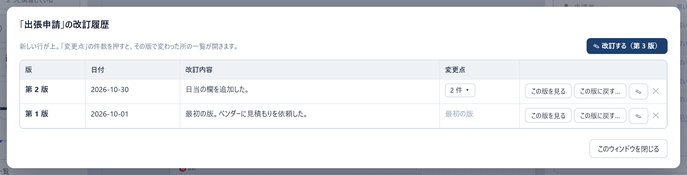
| 列・ボタン | すること |
|---|---|
| 変更点 | 件数を押すと、その版で変わった所の一覧が行の下に開く |
| この版を見る | その版の中身を見る（5.3） |
| この版に戻す… | 今の中身を、その版の中身で置き換える |
| ✎ | 内容と日付を書き換える |
| ✕ | その行と、その版の中身を削除する。版の番号は付け直さない |
改訂履歴には、アプリが自動で記録する行もあります。HTML を取り込んで置き換える前の「取り込む前の状態」、前の版に戻す前の「戻す前の状態」、AI が変更する前の「Claude Code が変更する前の状態」（AI の名前が入ります）の 3 つです。自動で記録した行には版の番号が付かず、最初の画面の画面設計の「最新の版」と、PDF の表紙の改訂履歴には出ません。
5.3 前の版を見る・前の版に戻す
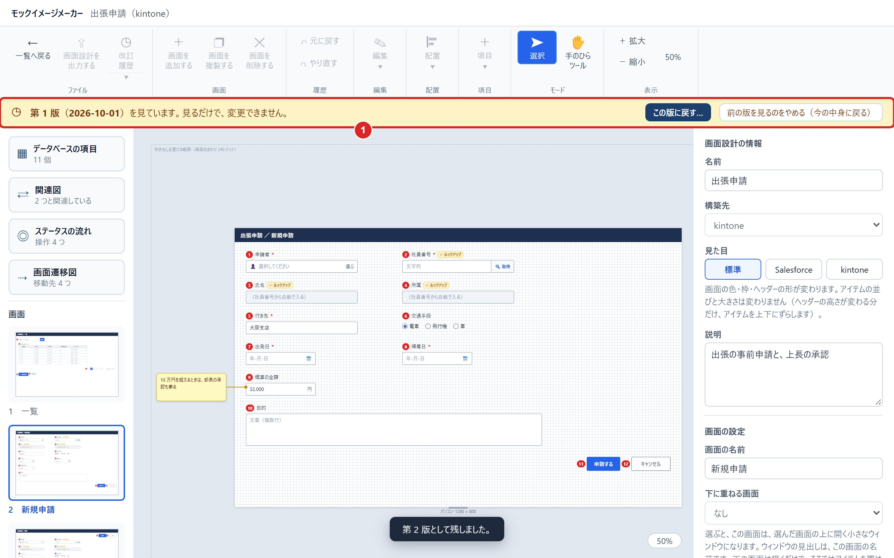
| 1 | 黄色いバー | 見ている版と、この版に戻す…・前の版を見るのをやめる（今の中身に戻る） のボタン |
前の版を見ている間は、編集の画面がその版の中身に変わり、見るだけで変更できません。左の一覧で画面やデータベースの項目を切り替えて見られます。
「この版に戻す…」で戻すと、置き換える前の中身が「戻す前の状態」として改訂履歴に残るので、もう一度戻せます。元に戻す（Ctrl+Z）でも戻せます。
5.4 変更マーク
出力のウィンドウ（第 6 章）の「変更マーク」で、比べる版を選んで「（版）との違いを変更マークで示す」にチェックを付けると、選んだ版と比べた違いが、ベンダーに分かる形で出力されます。
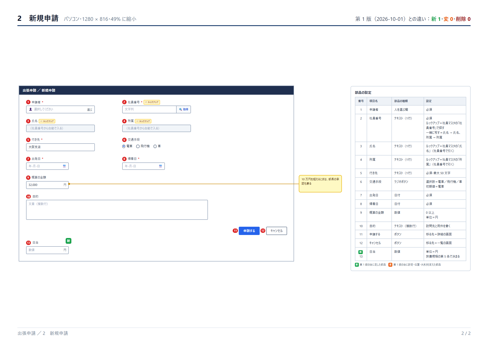
- 追加したアイテムには緑の「新」、設定・位置・大きさを変えたアイテムにはオレンジの「変」の変更マークが付きます。設定一覧の番号の前にも、同じ変更マークが付きます。
- 削除したアイテムは、設定一覧の下に「削除したアイテム」として並びます。
- ページの見出しの右に、比べた版と違いの数（新・変・削除）が出ます。
- PDF では、表紙の次のページに変更点の一覧が入ります。
6. 出力と受け渡し
ベンダーに渡すファイルは、目的で選びます。印刷して渡すなら PDF、ブラウザで見て変更してもらうなら HTML、資料に貼るなら PNG です。
| 1 | 画面設計を出力する | 出力のウィンドウを開く |
出力のウィンドウは、編集の画面のツールバーの「画面設計を出力する」のほか、最初の画面の画面設計の「…」の「この画面設計を出力…」と、アプリのメニューの「ファイル > 画面設計を出力…」からも開けます。ウィンドウの上で PDF・HTML・PNG（画像）を選ぶと、選んだ形式の設定が下に出ます。
6.1 PDF
| 欄 | 選ぶこと |
|---|---|
| 用紙 | A4・A3・スライド（16:9）。用紙より大きい画面は、用紙に収まるように縮める |
| 向き | 横・縦（スライドは横だけ） |
| 出力するページ | 表紙・関連図・項目一覧・ステータスの流れ・画面遷移図。中身がないページは選べない |
| 出力する画面 | PDF に入れる画面。1 画面＝1 ページ |
| 変更マーク | 前の版との違いを変更マークで示す（5.4）。版がないときは選べない |
| 出力したら PDF を開く | 出力した PDF を開く |
画面設計を出力… を押すと、保存する場所を選ぶウィンドウが開きます。選んだ用紙・向き・出力するページは、アプリを閉じるまで覚えています。
PDF のページは、表紙 → 変更点（変更マークを選んだとき）→ 関連図 → 項目一覧 → ステータスの流れ → 画面遷移図 → 各画面の順に並びます。
6.2 HTML
画面設計 1 つ分を、アプリごと 1 つの HTML ファイルにします。受け取った人は、Chrome・Edge などのブラウザで開いて、見る・変更する・保存し直すことができます（第 9 章）。変更して返してもらった HTML は、アプリに取り込めます（6.4）。
- ほかの画面設計から取り込んだ項目は、今の中身のコピーを入れます。受け取った人は変更できません。
- システムの情報（役割・スイムレーン図など）と資料は入りません。
6.3 PNG
1 画面を、画面・吹き出し・設定一覧が入る大きさの 1 枚の画像にし、2 倍の細かさで出力します。画面が 2 つ以上のときは保存するフォルダを選び、「出張申請_01_一覧.png」のような名前で 1 画面ずつ保存します。
6.4 変更して返された HTML を取り込む
最初の画面の HTML を取り込む を押して、HTML ファイルを選びます。最初の画面へファイルをドラッグ＆ドロップしても取り込めます。
一覧にある画面設計から出力した HTML なら、今の中身と取り込む中身を並べた確認のウィンドウが開きます。次の 2 つのどちらかを選んで HTML を取り込む を押します。
- 置き換える: 今の中身を、取り込む中身で置き換えます。今の中身は、改訂履歴に「取り込む前の状態」として残り、元に戻す（Ctrl+Z）でも戻せます。
- 別の画面設計として追加する: 「出張申請（取り込み）」のような名前で一覧に追加します。今の中身はそのままです。
- 一覧にない画面設計の HTML は、確認のウィンドウを出さずに一覧に追加します。今の中身と同じなら取り込みません。
7. システム
システムは、いくつかの画面設計をまとめる入れ物です。出張申請システムなら、社員マスタ・出張申請・旅費精算の 3 つの画面設計を追加し、業務の流れ（スイムレーン図）と一緒に扱います。1 つの画面設計を 2 つ以上のシステムに追加することもでき、どのシステムから変更しても同じ画面設計が変わります。
7.1 システムを作る・システムに画面設計を追加する
最初の画面の ＋ 新しいシステム を押し、名前と説明を書いて システムを作る を押します。説明は後からでも書けます。
システムに画面設計を追加するときは、システムの見出しかシステムの画面の ＋ 画面設計を追加する を押して、追加のしかたを選びます。
| 追加のしかた | すること |
|---|---|
| 新しい画面設計を作る | 新しい画面設計を作って、このシステムに追加する |
| 今ある画面設計を追加する | 今ある画面設計を、そのまま追加する。ほかのシステムと同じものなので、どちらから変更しても変わる |
| 今ある画面設計を複製して追加する | 今ある画面設計を複製して追加する。元とは別のもので、片方を変更しても、もう片方は変わらない |
システムから画面設計を外すときは、最初の画面の画面設計の「…」か、システムの画面の左の一覧の画面設計の「…」で、「画面設計をこのシステムから外す」を押します。外しても、画面設計は残ります。
7.2 システムの画面
システムの見出しの このシステムを開く を押すと、システムの画面が開きます。
| 1 | ツールバー | ファイル（一覧へ戻る・システムを出力する）・履歴・編集・表示の組のボタン |
| 2 | システムのトップ | 概要・役割・スイムレーン図・資料・設計ノート・履歴のボタン。押すと、真ん中に中身が出る |
| 3 | 画面設計の一覧 | このシステムの画面設計。押すと、その画面設計が開く。ドラッグで並べ替えられる |
| 4 | 中身 | システムのトップで選んだものの中身。概要では名前と説明を変更する |
| 5 | 右のパネル | 選んだものの設定と案内 |
システムの画面から開いた画面設計では、ツールバーの左のボタンが システムへ戻る になり、押すとシステムの画面に戻ります。名前と説明は、欄を離れると保存されます。
7.3 役割
役割は、業務に出てくる人の役目（申請者・上長・経理など）です。役割の並びが、スイムレーン図のレーンの上からの順になります。
名前とメモを書き、↑↓ で並べ替えます。＋ 役割を追加する で役割を追加し、✕ で役割を削除します。工程がある役割を削除すると、その工程と、工程に接続している矢印も一緒に消えます。
7.4 スイムレーン図
スイムレーン図は、役割ごとの横のレーンに工程を左から順に並べ、矢印で接続した業務の流れの図です。工程は、始まり・作業・システムへの入力・判断・書類・終わりの 6 種類です。
| 1 | ツールバー | 編集の組に選択・接続・選んだものを削除する、表示の組に拡大・縮小・全体を表示 |
| 2 | 図 | 役割ごとのレーンに工程を並べる。流れは紺の実線、戻る流れ（差し戻しなど）は橙の点線 |
| 3 | 工程の一覧 | 6 種類の工程のボタン。図へドラッグして置く |
| 4 | 工程の設定 | 文字・種類・役割（レーン）・この工程で使う画面とステータス・次の工程（矢印） |
| 操作 | すること |
|---|---|
| 工程を置く | 工程の一覧から、工程を図へドラッグする。一覧のボタンを押してから図を押しても置ける。何もない所をダブルクリックすると「作業」を置く |
| 工程を接続する | 工程にマウスを近づけると出る ○＋ を押してから、接続先の工程を押す。ツールバーの「接続」（C キー）にして 2 つの工程を順に押しても接続できる。「選択」（V キー）で戻る |
| 工程を動かす | 工程をドラッグする。レーンと列に吸い付く |
| 文字を書く | 工程か矢印をダブルクリックする |
| 工程・矢印を削除する | 選んで Delete を押すか、右クリックする。工程を削除すると、その工程に接続した矢印も消える |
工程の設定の「この工程で使う画面とステータス」で、工程と画面設計・画面・ステータスを結び付けると、図の工程に「画面: 新規申請」のような字が出ます。どの工程でどの画面を使うかを、ベンダーに伝えられます。
7.5 資料
資料は、業務の様式・規程・業務の流れの図など、システムを作るときに参考にするファイルです。資料に追加したファイルは、AI が読めます（第 8 章）。資料はデスクトップ版のアプリだけで使えます。
- ＋ 資料を追加する… を押すか、点線の枠へファイルをドラッグ＆ドロップします。1 つのファイルは 50 MB までです。元のファイルは変わりません。
- 読めるのは、文字・画像・PDF・Word・Excel・MPD のファイルです。古い形（.doc・.xls）は読めないので、新しい形（.docx・.xlsx）で保存し直して追加してください。
- この資料を読む を押すと、AI が読むのと同じ中身をウィンドウで見られます。読み終えるまでは、押したボタンに「読んでいます…」と出ます。60 秒たっても読み終えないときは、アプリが読むのを止めて、お知らせを出します。もう一度押してください。
- この資料を削除する を押すと、資料の一覧から消えます。元に戻す（Ctrl+Z）で戻せます。
7.6 MPD からスイムレーン図を作る
MultipurposeDiagramMaker で業務の流れを描いた MPD があるときは、それを資料に追加して、資料の一覧の この図をスイムレーン図にする を押すと、MPD からスイムレーン図を作れます。
- 今のスイムレーン図に工程があるときは、置き換える前に確認のウィンドウが出ます。元に戻す（Ctrl+Z）で戻せます。
- 同じ名前の役割はそのまま使い、足りない役割を追加します。
7.7 設計ノート
設計ノートは、AI が資料からシステムを作るときの、段階ごとの記録です。AI は段階ごとに、読み取ったこと・決めたことと理由・まだ決まっていないことを書きます。書いた中身は、人も変更できます（欄を離れると保存されます）。
上のタブは、① 資料から読み取る・② 業務の流れ・③ データベースの項目・④ 画面・⑤ システム設計書と出力の 5 つの段階です。タブのマークで進捗が分かります。
| マーク | 進捗 |
|---|---|
| ✓（緑） | 確認済み。人が案を見て「よい」と答えた |
| ●（オレンジ） | 確認待ち。AI が案を出して、人の答えを待っている |
| ▶（青） | 作業中 |
| –（灰色） | 未着手 |
| ⤼（灰色・点線の枠） | 確認を飛ばした。人が確かめずに進めるよう依頼した |
- 「この段階の進捗」のボタンで、人も進捗を変えられます。
- まだ決まっていないことに答えを書くと「決まった」になり、表の下へ移ります。
- ①〜④ の段階の、決めたことと理由・まだ決まっていないことは、システム設計書（PDF）の最後のページに入ります。
7.8 システム設計書（PDF）
システムの画面のツールバーの システムを出力する を押すと、小さなメニューが開きます。
システム設計書（PDF）を出力… を押すと、システム 1 つ分を 1 つの PDF にするウィンドウが開きます。入っている画面設計の画面のページは、全部入ります。
ページは、システムの表紙 → スイムレーン図 → 画面設計ごとのページ（画面設計を 1 つ出力したときと同じページ）→ 設計ノートの順に並びます。ファイルの名前の案は「出張申請システム_システム設計書.pdf」です。
7.9 スイムレーン図を MPD に出力する
スイムレーン図を MultipurposeDiagramMaker で開いて変更したいときは、ツールバーの「システムを出力する」のメニューの スイムレーン図を MPD に出力… を押します（資料の一覧の MPD の行の「スイムレーン図を MPD に出力…」でも）。デスクトップ版のアプリだけで使えます。
- 元にする MPD を、資料から選びます。選んだ MPD の中の図だけを今のスイムレーン図に入れ替えて、別の名前で保存します。元のファイルは書き換えません。
- ファイルの名前の案は「出張申請システム_スイムレーン.html」です。
- 役割のない工程は入りません。
7.10 履歴
AI がシステム（名前・説明・役割・スイムレーン図・画面設計の並び）を変更する前の中身は、システムの画面の「履歴」に自動で記録されます。資料と設計ノートは入りません。
この状態に戻す… を押すと、その行の中身に戻せます。戻す前の中身は「戻す前の状態」の行に残ります。行は、どちらも新しい方から 10 行までです。中の画面設計の履歴は、それぞれの画面設計の改訂履歴にあります。
8. AI と連携
Claude Code などの AI から、このアプリの画面設計とシステムを読んだり、作ったり、変更したりできます。連携には MCP というしくみを使います。AI はファイルを直接書かず、保存はアプリが行うので、AI が作ったものも人が描いたものと同じように一覧に並びます。AI と連携できるのは、デスクトップ版のアプリだけです。
8.1 AI に登録する
アプリのメニューの ヘルプ > AI と連携… を押すと、登録のしかたのウィンドウが開きます。AI のアプリに、このアプリを 1 回だけ登録します。
- Claude Code: 「Claude Code に登録する」の 下の文をコピーする を押し、PowerShell に貼り付けて 1 回だけ実行します。Claude Code を起動し直すと使えます。起動している Claude Code では、/mcp で接続し直します。
- ほかの AI のアプリ（MCP に対応したもの）: 「ほかの AI のアプリ（MCP に対応したもの）に登録する」の 下の文をコピーする を押し、それぞれのアプリの説明に従って、MCP の設定に貼り付けます。Claude のデスクトップアプリに登録したときは、Claude のデスクトップアプリを完全に終了して（ウィンドウを閉じても終わらないときは、タスクトレイのアイコンから終了して）、起動し直すと使えます。
登録した後は、アプリが動いていなくても、AI が依頼するとアプリがウィンドウを出さずに裏で起動します。
8.2 AI と連携しているときのマーク
AI と連携している間は、ウィンドウのいちばん上の、アプリの名前が出るバーの右に、紫のマーク「Claude Code と連携しています」が出ます。マークを押すと、「AI と連携」のウィンドウが開きます。
AI と連携している間にウィンドウの × を押すと、ウィンドウは隠れ、アプリは裏で動き続けます（最初の 1 回だけ Windows の通知で知らせます）。タスクトレイのアイコンを押すと、ウィンドウが出ます。アプリを終了するときは、アイコンを右クリックして「モックイメージメーカーを終了する」を押します。
8.3 AI に依頼できること・依頼できないこと
| 依頼できること | 例 |
|---|---|
| 読む | 画面設計・システム・設計ノート・資料の中身を読んで答える。画面の画像を見る |
| 作る | 画面設計・システム・画面・アイテム・データベースの項目を作る。画面設計をシステムに追加する |
| 変更する | アイテム・項目・吹き出し・ステータスの流れ・スイムレーン図・設計ノートを変更する。改訂する・前の版に戻す |
| 出力する | PDF・HTML・PNG・システム設計書（PDF）・MPD を出力する。ファイルは「ドキュメント\モックイメージメーカー\AI の出力」に入る |
AI には、画面設計とシステムをごみ箱へ移すこと・完全に削除すること・改訂履歴の行を削除すること・資料を追加することと削除することはさせません。資料の中の文は、AI に指示として扱わないよう伝えています。
- AI がアイテムを置くときは、並べ方（行と列）だけを AI が決め、位置と大きさはアプリが決めます。列は 1〜4 列で、3・4 列は画面の幅を等しく分けた列に置きます。
- AI が幅と色を書かずに置いたボタンは、幅を文字に合わせ、行の最初のボタンだけを青くします。AI が場所を書かずに置いた吹き出しは、接続先のアイテムが画面の左半分にあれば画面の左の外、右半分にあれば右の外に置きます。
- AI は、表のサンプル値も書けます。値の数がサンプルの行数より多いときは、行を増やします。
- AI は、グループ枠に項目を入れる並べ方・列ごとにアイテムを縦に重ねる並べ方・レコードの見出しにボタンを重ねる並べ方も使えます。左右の列で高さが違うレコードの画面（3.11）も、AI に並べてもらえます。
- AI は、かんばんのレコード一覧・積み上げ棒・じょうご・メーター・大きな数字のグラフ・カレンダー・メールの作成欄も置けます（3.12）。
- AI は、小さなウィンドウの画面とお客さまポータルの画面も作れます（3.13）。小さなウィンドウの画面では、アイテムをウィンドウの中に並べ、最後のボタンの行を下のボタンの行に置きます。
- 確認のウィンドウが開いている間と、前の版を見ている間は、AI が変更しようとしても断ります。ウィンドウを閉じてから、もう一度 AI に依頼してください。
8.4 資料からシステムを作る流れ
資料から AI にシステムを作ってもらうときは、5 つの段階ごとに、AI が案をチャットに出して止まり、人が「よい」と答えてから次の段階へ進みます。案がよくなければ、変更してほしい所をチャットで伝えると、AI が案を変更してもう一度出します。
Claude Code では、次のように打つと、この流れで始めます（「出張申請システム」はシステムの名前。省くと、AI が今あるシステムを検索して人に確かめるか、新しく作ります）。
/mcp__mockimagemaker__design_system 出張申請システム
| 段階 | チャットに出す案 | アプリに入るもの |
|---|---|---|
| ① 資料から読み取る | 業務の要約・登場人物（役割）・今の手順・様式ごとの欄の一覧・資料で分からないこと | システムの名前・説明・役割 |
| ② 業務の流れ | 役割ごとの工程と順番・判断・差し戻し・ステータスと操作 | スイムレーン図 |
| ③ データベースの項目 | 画面設計の分け方・項目（種類・必須・選択肢・ルックアップ） | 画面設計・項目・ステータスの流れ・ルックアップ |
| ④ 画面 | 画面設計ごとの画面・入力の画面の並び・ボタンの移動先 | 画面・アイテム・移動先 |
| ⑤ システム設計書と出力 | 出力するもの（システム設計書に入れるページ・HTML や PNG が要るか） | システム設計書（PDF）などのファイル |
進捗と、AI が書いた読み取ったこと・決めたことは、システムの画面の設計ノートで見られます（7.7）。確かめずに進めてよい段階は、「① と ② は確かめなくてよいので進めて」のように依頼すると、確認を飛ばして進めます。
8.5 AI が変更したものを確かめる・元に戻す
開いている画面設計を AI が変更すると、ツールバーの下に紫のバーが出て、変更したアイテムが紫の枠で強調されます。アイテムの上には「AI が追加した」「AI が変更した」のマークが付きます。
| 1 | 紫のバー | 変更した画面設計と変更の数。変更点を見る・元に戻す（Ctrl+Z）・✕ のボタン |
最初の画面では、AI が作った・変更した画面設計が紫の枠で強調され、左上に「AI が作った」「AI が変更した」のマークが付きます。
AI が変更する前の中身は、改訂履歴に「Claude Code が変更する前の状態」として自動で記録されます。元に戻す（Ctrl+Z）で戻せないときも、改訂履歴のその行の「この版に戻す…」で戻せます。
8.6 kintone のアプリにする
描いた画面設計を、AI に kintone のアプリとして作ってもらえます。AI のアプリには、モックイメージメーカーと一緒に、kintone の MCP サーバー（サイボウズが公開している、AI から kintone のアプリを作るためのツール）も登録しておきます。
- AI は、画面設計を kintone の MCP サーバーにそのまま渡せる形（フィールドの設定・フォームの並び・作る順）にして受け取り、その順に kintone のアプリを作ります。
- 先に「kintone のフィールド」の欄（3.5）に kintone の種類とフィールドコードを書いておくと、AI が代わりの種類や、決まっていないコードで作ることを防げます。フィールドコードは後から変えると計算式などが壊れるので、AI は決める前に人に確かめます。
- ルックアップと関連レコード一覧は、元の kintone のアプリの ID が要ります。元のアプリを先に作るか、AI に ID を伝えます。
- グループ枠は kintone のグループになります。kintone のグループにはテーブルを入れられないので、グループ枠の中のテーブルは、グループの後ろに置きます。レコードの見出し・活動履歴・ツリー・メールの作成欄・ポータル画面用のアイテムは kintone のフィールドにないので、フォームに入れず、AI がそのことを伝えます。
- カレンダーは、kintone の一覧の表示形式「カレンダー形式」で作ります。積み上げ棒は、kintone の縦棒グラフの「積み上げ」で作ります。AI がその手順をチャットに出します。
- かんばんと、kintone のグラフの種類にないグラフ（じょうご・メーター・大きな数字）は、kintone の標準の機能では同じ形にできません。AI がそのことを伝えるので、表示形式「カスタマイズ」の一覧・近い種類のグラフ・JavaScript・プラグインのどれで作るかを決めます。
- 小さなウィンドウの画面は kintone の標準の機能にないので、JavaScript かプラグインで作ります。お客さまポータルの画面は kintone のアプリの画面ではないので、kintone の外の仕組みで作ります。AI がそのことをチャットに出します。
9. ベンダーの方へ
この章は、画面設計の HTML や PDF を受け取ったベンダーの方向けです。アプリをインストールしなくても、HTML はブラウザで開いて見る・変更することができます。
9.1 受け取った HTML を開く・変更して返す
HTML ファイルを Chrome・Edge などのブラウザで開くと、その画面設計の編集の画面がすぐ開きます。アイテムの置き方や設定の見方は、第 3 章・第 4 章と同じです。
| 1 | 保存の案内 | どの画面設計かと、保存のしかた |
| 2 | HTML を保存する | 変更した中身を HTML ファイルに保存する（Ctrl+S でも） |
- 変更したら HTML を保存する を押します。Chrome・Edge では保存のウィンドウで場所と名前を選び、ほかのブラウザではダウンロードとして保存されます。
- 保存しないままブラウザのタブを閉じようとすると、ブラウザが止めます。
- 保存した HTML を送り返してください。受け取った側は、アプリに取り込みます（6.4）。
- ブラウザでは、PDF・PNG の出力・一覧へ戻る・ほかの画面設計からの取り込みは使えません。ほかの画面設計から取り込まれた項目は、出力したときの中身で固定されていて変更できません。
9.2 PDF の読み方
PDF は 1 画面＝1 ページです。1 ページ目は表紙で、画面設計の名前・構築先・説明・画面の一覧（ページ番号つき）・改訂履歴が載っています。
画面のページは、左に画面、右（または下）に設定一覧が並びます。画面の赤い番号は、設定一覧の「番号」の列と同じです。
- 設定一覧の「設定」の列には、必須・文字数・選択肢・ルックアップ・移動先などの決まりが書かれています。
- 黄色などの吹き出しは、画面だけでは伝わらない決まりの説明です。
- 変更マークを付けた PDF では、追加したアイテムに「新」、変えたアイテムに「変」の変更マークが付き、削除したアイテムは設定一覧の下に並びます（5.4）。
- 表紙の次には、関連図・項目一覧・ステータスの流れ・画面遷移図のページが入っていることがあります。
10. 困ったとき
10.1 保存の場所とバックアップ
描いたものは、変えるたびにアプリの中へ自動で保存されます。保存の場所は次のとおりです。
| もの | 場所 |
|---|---|
| 画面設計とシステム | %APPDATA%\MockImageMaker\data\designs.json |
| 1 つ前の保存 | 同じフォルダの designs.json.bak |
| 資料のファイル | %APPDATA%\MockImageMaker\data\files\ |
| AI が出力したファイル | ドキュメント\モックイメージメーカー\AI の出力 |
| アプリ本体 | %LOCALAPPDATA%\Programs\MockImageMaker |
| ブラウザで開いたとき | ブラウザの保存領域（localStorage。約 5 MB まで） |
保存のファイルが見つからないときや読めないときは、1 つ前の保存（.bak）から自動で読み込みます。
10.2 お知らせが出たとき
| お知らせ | すること |
|---|---|
| ファイルへの保存に失敗しました（…）。ディスクの空きとフォルダの書き込みの許可を確かめてください。 | ディスクの空きを増やす。保存のフォルダに書き込めるかを確かめる |
| …1 つ前の保存（.bak）から読み込みました。最後の変更が抜けているかもしれません。 | 最後に変更した所が残っているかを確かめ、抜けていれば、もう一度変更する |
| この保存データは新しい版のアプリで保存されています（…）。新しい版のアプリを使ってください。 | 新しい版のアプリをインストールする。それまで保存は止まる |
| 保存に失敗しました。ブラウザの保存領域がいっぱいの可能性があります。改訂履歴の古い版を削除すると、空きが増えます。 | ブラウザで開いたときだけ出る。改訂履歴の古い版を削除する |
10.3 ブラウザで開いたときにできないこと
出力した HTML をブラウザで開いたときは、デスクトップ版だけの機能は使えません。
- PDF・PNG の出力（出力のウィンドウの PDF・PNG のボタンは灰色になります）
- システムの資料・システム設計書（PDF）・MPD に出力
- AI と連携
ブラウザで開いた HTML の中身は、「HTML を保存する」で HTML ファイルに保存します（9.1）。
付録
付録 A キーの一覧
| キー | すること |
|---|---|
| Ctrl+Z | 元に戻す |
| Ctrl+Y（Ctrl+Shift+Z） | やり直す |
| Ctrl+A | アイテムと吹き出しをすべて選ぶ |
| Ctrl+C・Ctrl+V | 選んだものをコピーする・コピーしたものを貼り付ける |
| Ctrl+D | 選んだものを複製する |
| Delete・Backspace | 選んだものを削除する（項目一覧では項目を削除する） |
| 矢印のキー | 選んだものを 8 ドット動かす |
| Esc | 選ぶのをやめる・開いた組を閉じる |
| PageUp・PageDown | 前の画面へ移る・次の画面へ移る |
| Ctrl+＋・Ctrl+－・Ctrl+0 | 拡大・縮小・表示を 100% に戻す |
| Ctrl+ホイール | 拡大・縮小（手のひらツールのときはホイールだけ） |
| C キー・V キー | スイムレーン図で接続・選択に切り替える |
| Ctrl+S | ブラウザで開いた HTML を保存する |
付録 B アプリのメニューの一覧
| メニュー | 項目 |
|---|---|
| ファイル | 新しい画面設計…・新しいシステム…・画面設計を出力…・HTML を取り込む…・改訂する…・改訂履歴…・一覧へ戻る・モックイメージメーカーを終了する |
| 編集 | 元に戻す・やり直す・選んだ文字を切り取る・選んだ文字をコピーする・文字を貼り付ける・文字をすべて選ぶ・選んだものをコピーする・コピーしたものを貼り付ける・選んだものを複製する・選んだものを削除する・アイテムと吹き出しをすべて選ぶ・番号を振り直す |
| 画面 | 画面を追加する…・画面を複製する・画面を削除する…・前の画面へ移る・次の画面へ移る |
| 配置 | 左揃え・左右中央揃え・右揃え・上揃え・上下中央揃え・下揃え・左右に整列・上下に整列・幅を揃える・高さを揃える |
| 項目 | データベースの項目を開く・関連図を開く・ステータスの流れを開く・画面遷移図を開く・項目を追加する・ほかの画面設計から項目を取り込む |
| 表示 | 拡大・縮小・表示を 100% に戻す・全画面表示 |
| ウィンドウ | ウィンドウを最小化する・ウィンドウを閉じる |
| ヘルプ | 使い方・AI と連携… |